Overview
The Investigation Workflow Suite maps a safety occurrence as a causal diagram. Every suspected event or condition becomes an object on the canvas, is tested against evidence with the E/I/I framework (Existence, Influence, Importance), and is connected to its consequences with causal arrows.
A finished map reads in two directions at once. Left to right is time: the sequence that led to the occurrence. Bottom to top is organisational depth: from what individuals did, up through the conditions and controls that shaped their actions, to the organisational influences behind those controls. The causal chains converge on the critical event at the bottom right.
Reading this guide
The sections that follow run in the order an investigation does. The canvas, objects, running an investigation and building the map describe the method; the workspaces describes each tab of the application in turn, with every control on it; the sections after that cover what feeds a report, the files, Settings and exporting. The list down the left jumps to any of them.
The pictures are of the worked example investigation that ships with the app, taken by the application itself rather than drawn, so what is in them is what you will see. Click one to enlarge it.
Help opens from the header, or with F1, and carries this guide plus three references the app draws live from its own rules: Object key, the colour and shape of every object state with the path that leads to it; Decision tree, the order the E/I/I questions are asked in; and Canvas layers, what sits on the map and in what order. About names the edition and the licence terms. Close shuts the dialog, and so does Escape.
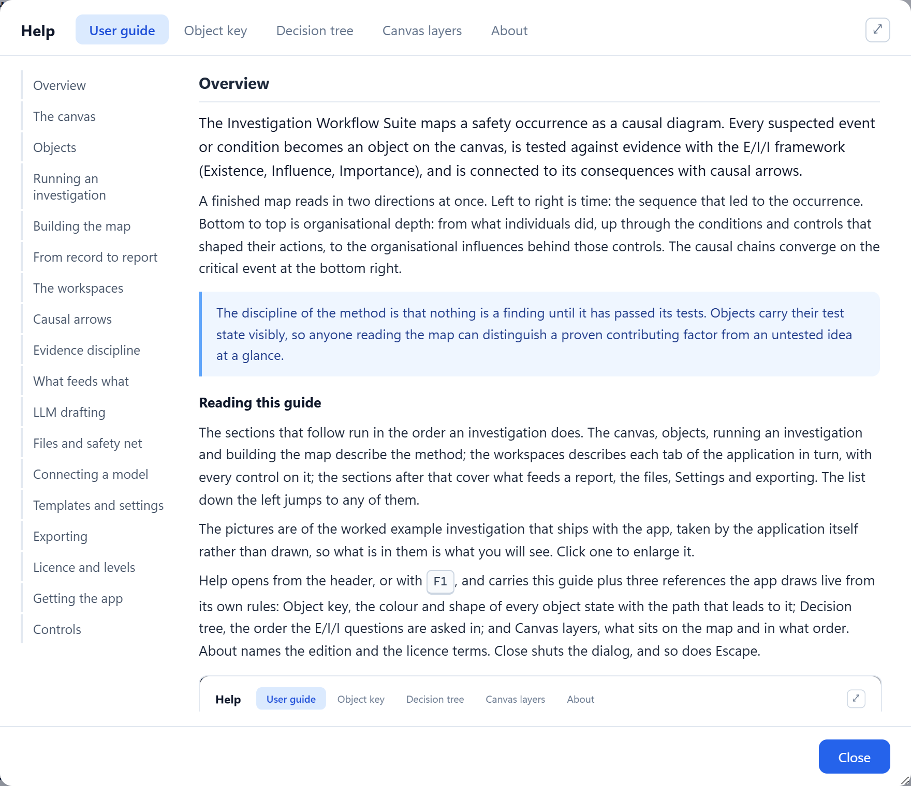
The canvas
The six horizontal lanes are organisational levels. The faint italic text inside each lane suggests the kinds of factors that belong there.
- External Influences: Influences from outside the organisation: regulators, industry standards, surveillance and guidance.
- Organisational Influences: The organisation's own systems: hazard identification, change management, risk assessment, training needs analysis, communication, auditing.
- Risk Controls: The defences that should prevent or catch the occurrence: procedures, warning systems, training, supervision, rosters, infrastructure.
- Local Conditions: The conditions on the day: weather, workload, fatigue, distractions, health, knowledge and experience.
- Individual Actions: What people did: handling, planning, inspecting, communicating, documenting, monitoring.
- Occurrence Events: The event sequence itself, converging on the critical event.
The heavier line above Local Conditions separates the organisational levels (above) from the individual and situational levels (below). Drag any lane boundary to resize it; the lanes and objects below move together, so nothing falls out of its lane.
Objects
An object's colour, shape, and border show exactly where it stands in the testing workflow. The full reference, with the path that leads to each category, is on the Object key tab. The states you will see most:
Two other signals: a dashed border means Existence is not yet proven, and the small corner dot tracks completion - amber on every object still outstanding, green once it is finalised - so an unfinished investigation is obvious at a glance.
The evidence form carries a second panel, Analysis, beside Evidence. Left, read-only: the object's record exactly as the Record tab would render it, so the paragraph on the right is always written against what a reader actually sees if it is left blank. Right, the paragraph itself - on the critical event, labelled Outcome and consequences - with a status badge (not written yet, draft, finalised, or out of date against a record that has since changed), Finalise once you are happy with it, Revert to drafted to undo your edits, and Clear to remove it. Below that, a Safety actions list records what was done, what is proposed, or a recommendation against this object - most relevant to a flagged safety issue, but open on every object. Both save quietly as you work, the same as the suite tabs, and each save is written to disk at once rather than waiting for the autosave timer, because neither is covered by canvas undo: an unrelated Ctrl+Z on the map can jump back past a paragraph or safety action written since, without ever touching it directly.
Running an investigation
The order below is the method, not a suggested reading order. Several steps are only correct if they happen before another one: gather before evidence perishes, build the timeline before the map, settle the interview record before drafting. These are the same phases as the Dashboard tab's checklist, so the tool and this page describe one method rather than two.
Decide whether there is an investigation, and start the record the moment there is.
- Create the investigation from File, New investigation, and name it for the occurrence rather than the reportFile menuThe name reaches every export and every draft. An occurrence keeps its name; a report is one of several things you will produce about it.
- Work down the triage questions and answer each Yes, No, or N/AChecklistAn unanswered question is not the same as N/A, and the header count tells you which is which at a glance.
- Record the decision to investigate, and the reasoning behind it, as your first log entryLogThe log is contemporaneous. An entry written now is evidence of when you knew something; the same entry written in a fortnight is a recollection.
Set the scope and the clock before the work spreads.
- Write the scope into the notebook: the questions the investigation must answer, and what it will not examineAcciMap notebookScope creep in a safety investigation is usually invisible until the report will not converge, and the half that gets left out is the half nobody wrote down.
- Set the standard of proof the investigation works to, and the organisation's acronym glossarySettingsThe evidence form warns when a passed test sits below the standard you set, and the glossary is what lets a draft expand an abbreviation instead of guessing at it.
- List what has to happen and by when, dragging the list into the order you will work itChecklist, to-do list
Deal with continued safe operation before investigating why it happened.
- Decide whether anything must change now to keep operating safely, and log the decision either wayLogA decision that nothing was needed is a finding, and needs the same record as a decision to act.
- Refer any risk outside the investigation's scope rather than absorbing itChecklistAbsorbing it is how an investigation stops converging.
Get what perishes first, then build the sequence everything else will be argued against.
- Work the evidence-gathering list and mark each source obtained, N/A, or still outstandingChecklistCCTV is overwritten, recorded data is overwritten, and testing for impairment has a window that closes. This is the only part of an investigation where a day's delay destroys evidence rather than costing time.
- File each source as an evidence item with a caption, why it matters, and a referenceEvidenceThe reason you kept something is what you forget, and it is the half a draft most needs. A caption says what a thing is; significance says why it is in the investigation.
- Mark every text extract as verbatim or as your own descriptionEvidenceThe application holds no recordings, so CCTV and audio arrive as text you typed. A verbatim record may be quoted; your description may not, and marking it is what stops a draft putting your words in someone's mouth.
- Build the sequence of events, giving each one its source and its time basisTimelineDo this before the map. The map is an argument about what led to what, and you cannot argue about a sequence you have not established. Times in mixed bases with no correction recorded are the usual reason a sequence will not hold together.
Get each person's own account, early, and turn it into something the investigation can use.
- Review the recorded data and the timeline before the interview, and draft your topics as open questionsTimeline, InterviewsAn interview is the one source you cannot re-run cleanly. Asking what the data already answers spends the time you needed for what only this person knows.
- Work the preparation checklist before each interview: notice, fitness to attend, a support person, somewhere private, and enough timeInterviewsAn account given by someone fatigued, rushed or blindsided is worth less, and interviewing them again does not undo the first attempt.
- Read the opening protocol at the start, and confirm the interviewee has understood it before you beginInterviewsWhat an interviewee believes the interview is for shapes what they tell you, so leaving it unsaid does not leave it unanswered.
- Settle the record while it is fresh - the transcript where it was recorded, your notes where it was not - correct it against what was said, and finalise itEvidence, InterviewsReport drafting is told whether an interview's account is settled or still a working draft, and weighs it accordingly. Leave it unfinalised and the drafting reads it as shorthand, which is why an event overview can read thin.
- File what the interview added as evidence, and add any new events to the timelineEvidence, TimelineAn interview that stays in the Interviews tab argues nothing on the map.
Test hypotheses rather than select them.
- Place the critical event, then add an object for every event or condition that might have played a partAcciMapDo not filter at this stage. The method works by testing, and a hypothesis you later exclude still strengthens the record.
- Test each object for Existence, then Influence, then Importance, recording the confidence behind each resultAcciMapThe category comes out of the testing. Choosing the category first and finding evidence for it is the failure this whole method exists to prevent.
- Where the evidence genuinely cuts both ways, switch the test to Argument mode and record both sidesAcciMapBoth sides then reach the report, so it can resolve the contrary evidence instead of quietly dropping it.
- Mark a test Inconclusive when it was examined and could not be settled, and say why in the commentAcciMapInconclusive is not the same as untested, and it is not a finding. It must still be discussed in the report, and your comment is what the draft discusses.
- Connect the causal chains back from the critical eventAcciMapEvery arrow is a claim that one thing led to another, and the map is only as strong as those claims.
- Finalise each object once its evidence is settledAcciMapThe green dot says the evidence would withstand review. Exports warn about anything left unfinalised.
Draft from the investigation, not from memory.
- Check what each section will be drafted from before generating anythingHelp, What feeds whatA section receives what its style declares and nothing else. If a section is coming out thin, the usual cause is that what it needs has not been recorded yet, not that the model is weak.
- Generate section by section, read each against the source material, correct it, then finalise itDraft reportA generated section is a proposal. Finalising is where you take ownership of the words, and it is the only signature the tool records.
- Regenerate any section marked stale rather than keeping itDraft reportA section drafted from material that has since changed is quietly out of date, which is worse than being obviously wrong because it still looks finished.
- Export the full set and file it with the investigationExportThe map image, the E/I/I tables and the collation together are the working record behind the report, and they are what a reviewer will ask for.
- Assign findings to owners with timeframes, and close the investigation on the checklistChecklistA finding with no owner is an observation.
Building the map
The Analysis phase above, in detail. This is the part of an investigation the map exists for.
- 1Place the critical event
Use + Critical event and put it in Occurrence Events, conventionally at the bottom right. Open it and record what happened and the proof of its significance. Everything else on the map exists to explain this object.
- 2Brainstorm hypotheses
Add an object (+ Object) for every event or condition that might have played a part, placed in the lane where it belongs and roughly where it sits in time. Do not filter at this stage: the method works by testing, not by intuition, and a hypothesis that is later excluded still strengthens the investigation record.
- 3Gather evidence and test Existence
Double-click an object, record the evidence, and answer the first question: did this actually exist or occur? A pass turns the border solid. A fail excludes the hypothesis, struck through but kept on the map.
- 4Answer the risk questions
For objects that exist, decide whether the event or condition increased risk or decreased risk. The two are mutually exclusive. Increased-risk objects take sharp corners; decreased-risk objects become green positive events.
- 5Test Influence
Did this factor actually influence the occurrence? A pass makes it a blue contributing safety factor and turns its outgoing arrows solid green: a proven causal path. A fail leads to one final question. A small Reason drop-down sits beside the field - the single box in conclusive mode, each of the for and against boxes in argument mode - grouped by the criteria a careful investigator weighs: the target factor, a plausible mechanism, association on other occasions, alternative explanations, timing, location or place, magnitude, expected effects, the counterfactual, what a good explanation must address, enhancers, inhibitors, what is normally relevant for this kind of link, assumptions required, and other perspectives. Choosing an item inserts a starting sentence, in your own words from there, which you then complete - at the start of an empty box, or appended on a new line if you have already written something. The list is editable in Settings.
- 6Test Importance
A factor that did not influence this occurrence may still be worth addressing. A pass makes it an orange other risk factor, a finding in its own right. Failing both Influence and Importance excludes the object.
- 7Connect the causal chains
Hover an object, drag from one of the ports on its edge, and drop on the object it led to. Build the chains back from the critical event: every arrow is a claim that one thing led to another, and the map is only as strong as those claims.
- 8Attach the supporting material
The evidence form's right-hand panel holds working notes and the material behind them: click the capture zone and paste a screenshot or a manual extract, or drag a file from Explorer and drop it on the zone (PDFs included; the zone lights up as the file comes over it). The Evidence tab's own capture box takes a drop the same way. Each capture takes a short note on why it matters. The app is a tool, not a repository: everything captured is a copy embedded in the
.sfm(files to 2 MB, images to 5 MB), so nothing breaks if originals move - and whole documents stay in your organisation's investigation folder, which remains the system of record. Capture the relevant page or passage, not the manual. The form opens at 90 per cent of the window, with that right-hand column taking about a third of it; drag the divider between the two to give whichever side you are working on the room, resize the form from its corner, and both are remembered for the next time you open one. Every field grows as you type. The Captured material sub-tab shows everything held across the investigation in one place, grouped by where it lives, by lane, or by kind, with a jump to wherever each item lives; drag the tabs themselves into whatever order suits how you work. - 9Finalise and review
When an object's evidence is settled, tick Finalised in its evidence form; the corner dot turns green. Then stand back: does every contributing factor have a proven path to the critical event? Are the excluded hypotheses genuinely closed? Exports will warn about anything left unfinalised.
The workspaces
An open investigation shows a row of tabs, each one workspace of the suite. Everything they hold travels in the one .sfm file. Drag the tabs into whatever order suits how you work - the order is remembered on this machine.
The tabs, in the order the suite ships with, are Dashboard, Log, Evidence, Timeline, the map tab (named for the edition's own methodology, AcciMap in this build), Record, and Draft report. Each is its own section below.
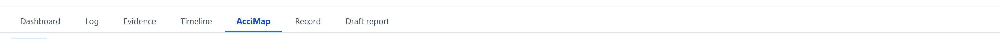
Dashboard
Where the investigation stands, on the tab you open first. A band of tiles across the top counts what has been gathered and what has been settled: objects on the map and how many are finalised, evidence items, interviews, timeline events, outstanding to-dos, checklist questions answered, report sections drafted and finalised in the style you have chosen, and the errors and warnings the record checks are currently reporting. Every figure is read live from the file, so none of it has to be kept up to date by hand. Click a tile to go to the tab where that work is done.
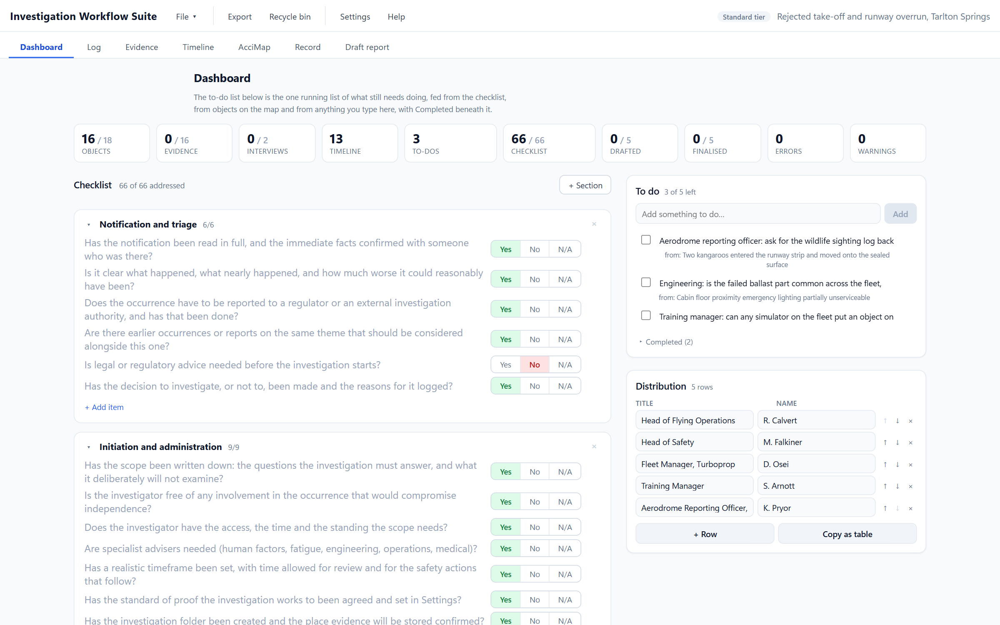
Under the tiles sit the two lists the tab has always carried: the checklist, and the to-do list, which is the one running list of what still needs doing, fed from the checklist, from objects on the map and from anything you type here, with Completed beneath it.
The checklist is a sequential question flow for the whole investigation, answered Yes, No, or N/A (click an answer again to clear it). Guidance notes sit under the questions where a step needs prompting - including an evidence-gathering list (CCTV, recorded data, audio, records of recent change, impairment and fatigue assessment and so on) to help you think of sources before they are overwritten or lost. The header counts how many items have been addressed, and each section collapses to its header (click the title or chevron) so completed sections tuck away. The checklist seeds from the template in Settings when the investigation is created.
The to-do list beside it is the other half of the same idea. The checklist asks what an investigation of this kind should cover and is the same every time; a to-do is whatever this one needs next, in your own words, and no template could anticipate most of it: ring someone back on a number, chase the CCTV before it is overwritten, ask the roster office for the prior fortnight. Items stay in the order you added them. Ticking an item writes a line to the Log as a record of what was done and moves the item out of the list above into a collapsed Completed section beneath it, which you can expand to check or untick; unticking moves it straight back. Dropping an item with the cross removes it without logging anything, because it was never done. The list is yours as a working tool; nothing on it reaches a report.
A to-do can also be raised from inside an object's form on the acci-map, just under its notepad, for whatever you need to chase up before you can finish that object. It is the same list as this one, not a separate one: it shows here too, with a from: <object> line you can click to jump straight to that object on the acci-map, which is brought into view and flashed so you can see exactly which one it is (double-click the line to open its form instead), so what still needs doing is visible at any point, whether you are working the to-do list or the map, and it is easy to hand a job to another investigator.
Below it sits Distribution: who this investigation's outputs go to, as a Title and Name table. Add, remove, and reorder rows freely - it is appended automatically to the foot of every exported report, so it is never left off by hand. Copy as table puts the same rows on the clipboard as a table for pasting into a document the app did not produce, falling back to tab-separated text where a rich clipboard paste is not available. A new investigation starts with whatever rows the edition ships as defaults, if any; existing investigations are never changed.
The tiles, in order
Ten tiles run left to right. Objects counts how many objects on the map are finalised out of the total and jumps to the map tab. Evidence counts finalised evidence items out of the total and jumps to Evidence. Interviews counts finalised interviews out of the total and also jumps to Evidence. Timeline counts the number of timeline events and jumps to Timeline. To-dos counts how many are still outstanding; clicking it does nothing, since the list is already on this tab. Checklist counts questions answered out of the total, for the same reason. Drafted counts report sections drafted out of the chosen style's total and jumps to Draft report, and Finalised does the same for sections finalised. Errors and Warnings count the record checks currently sitting at each severity, and both jump to Record.
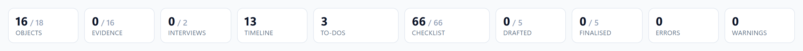
The checklist panel
The panel is titled Checklist, with a count reading "{n} of {n} addressed" beside it. + Section adds a new section and asks for its title. Each section carries a chevron that collapses it to its header (clicking the title does the same), a count of how many of its items are answered, and a × that deletes the whole section. Within a section, each item offers Yes, No and N/A as its answer - click the one already chosen to clear it again - and a × that removes the item. A New item… (Enter to add) box at the foot of a section, beside its own + Add item button, raises another question in it.
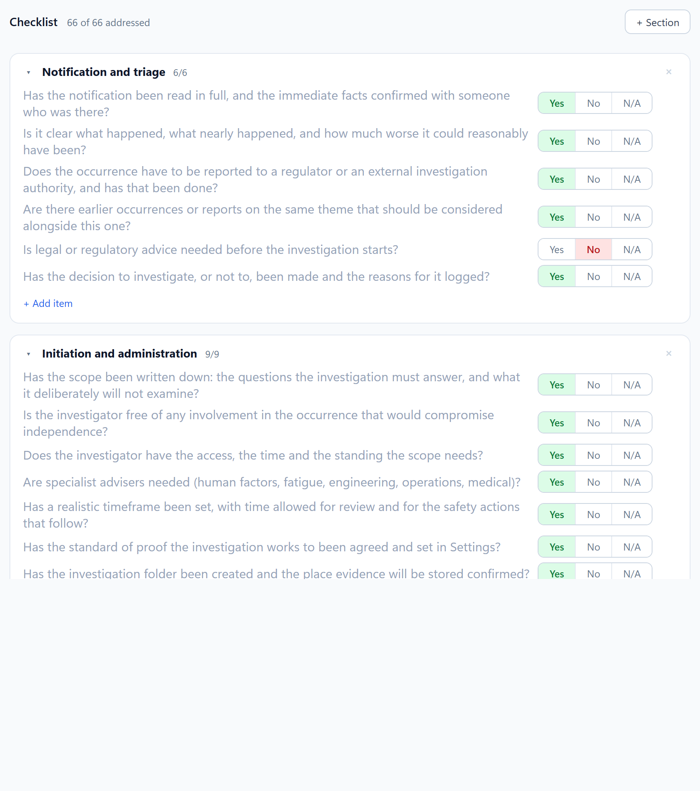
The to-do panel
Titled To do, with a count reading either "nothing yet" or "{n} of {n} left". Type into Add something to do… and click Add to raise one. Each row carries its own tick, its text, a × that drops it, and, where it was raised from an object on the map rather than typed here, a from: <object> line naming that object. Ticking a row moves it down into a collapsed Completed section beneath the list, which expands so you can check or untick what is done.
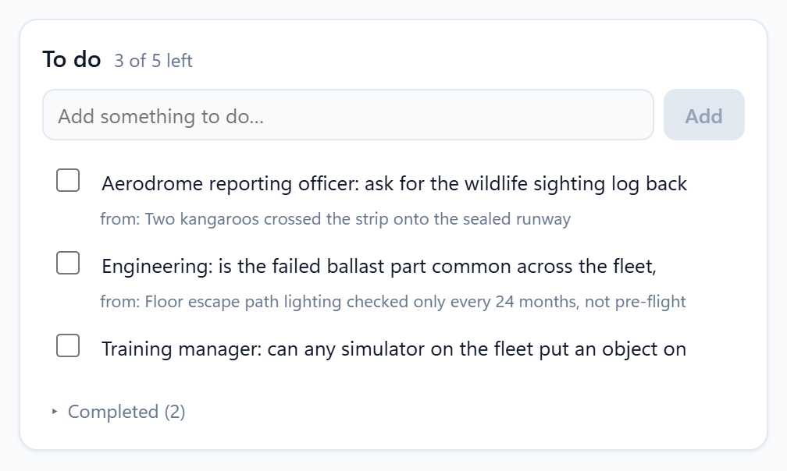
The distribution panel
Titled Distribution, with a Title column and a Name column. Each row carries Move up, Move down and Remove this row, and + Row adds another beneath them. Copy as table puts the whole list on the clipboard, ready to paste into a document the app did not produce.
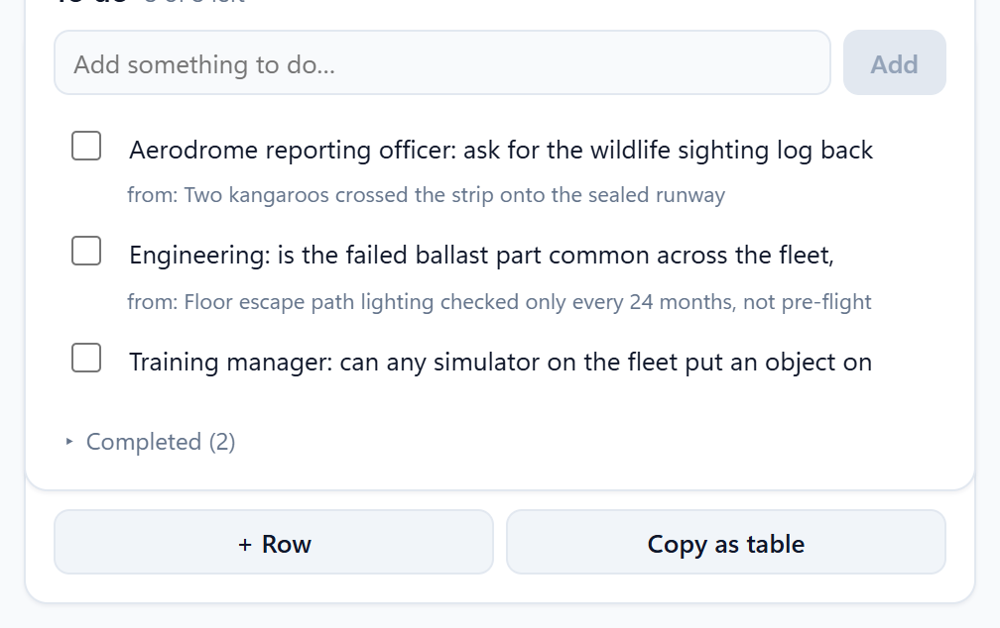
Log
The running sheet: a timestamped record of investigation activity, displayed as message bubbles grouped by day. Type a line, press Enter, and it is on the record. Entries cannot be edited afterwards (one added in error can be removed), which is what makes the log worth citing. The logbook is included in exports and in the drafting collation as the contemporaneous record.
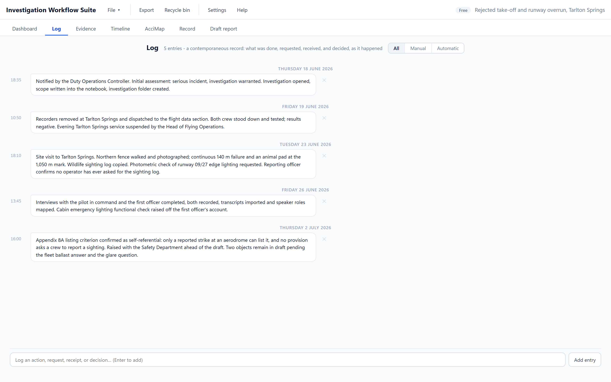
The application writes to the same sheet as you work. A checklist question answered, a to-do added or ticked, an object created, renamed or removed, a test result recorded, evidence captured or finalised, an interview finalised, a draft landed, an audit run, a report exported, a shared-file conflict resolved: each one appears as its own entry, marked "auto" and shown in a muted bubble. Typing in a text box is never logged, only the change it settles. Use the All / Manual / Automatic filter at the top of the tab to read one kind at a time. An automatic entry cannot be edited or removed, which is the point of it, and both kinds go into the drafting collation and the report's investigation activity appendix, so a reader can follow the investigation's own timeline.
Reading an entry
Choose All, Manual or Automatic at the top of the tab to narrow the list to one kind. An entry that names an object on the map carries a → <object> link that opens it. A manual entry carries a ✕ for removing it; an automatic entry carries neither link nor cross, since there is nothing to remove and nothing of its own to open.
Adding an entry
The composer sits at the foot of the tab: a box reading Log an action, request, receipt, or decision… (Enter to add), with an Add entry button beside it for the same thing. Either way the line lands on today's date, in its own bubble, timestamped to the minute.
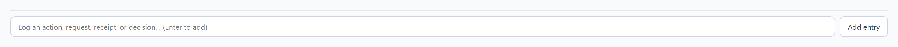
Evidence
Everything the investigation has gathered, under one tab with three sub-tabs: Safety reports, Interviews, and Captured material.
Safety reports
Reports submitted by the people involved: air safety reports, written statements, self-reports. Paste each one in as it was written, with the submitter's role, the date, and the report reference so it stays traceable. Do not tidy the wording; how someone described what happened is itself evidence. These are first-person accounts written close to the event, often before anyone has been interviewed, which makes them some of the best narrative material an investigation has, and they feed report drafting the same way interviews do. They need no writing-up pass of their own: a submitted report is already prose, in the submitter's own words.
Each report is marked as submitted under a confidential or just-culture scheme by default. That flag travels with it into drafting, where the model is told it may use the account to understand what happened and attribute it by role, but must not quote it verbatim or reproduce identifying detail from it. Those protections are the reason people report at all, and a drafted report is a document that gets distributed. Untick it only for a statement given without them.
+ Report adds a new sub-tab, titled by the report once you give it one. A report submitted under a confidential or just-culture scheme carries a small ● lock mark on its sub-tab, so the protected ones are visible at a glance without opening each in turn.
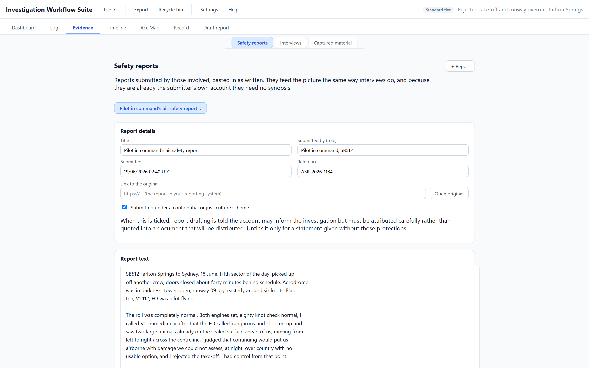
The safety report form
Report details carries the fields that place the report: Title, Submitted by (role), Submitted, and Reference. A Link to the original field and its Open original button sit beside them, for a report that is also filed somewhere else - a safety database, a shared drive - so you can get back to the original without hunting for it. The confidentiality tick is below them, as described above.
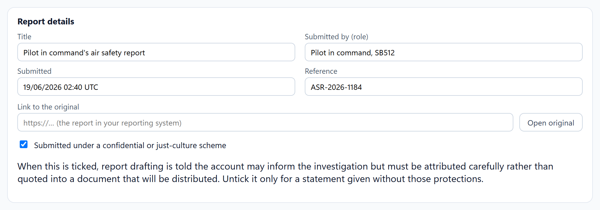
Report text is the single box the account goes into, pasted in as it was written. Supporting material is the same capture panel an object carries on the map, for anything that came with the report itself. Delete report, at the foot, asks before it removes the report.
Interviews
One record per interview. Each starts with a preparation checklist and an opening protocol seeded from the templates in Settings - answered Yes, No, or N/A and collapsible once complete, the same way as the investigator's checklist - then background fields and the boxes you write the interview up in.
+ Interview adds a new sub-tab. Double-click a sub-tab to rename it to the interviewee's name once you have it; Delete interview, at the foot, removes the interview after asking.
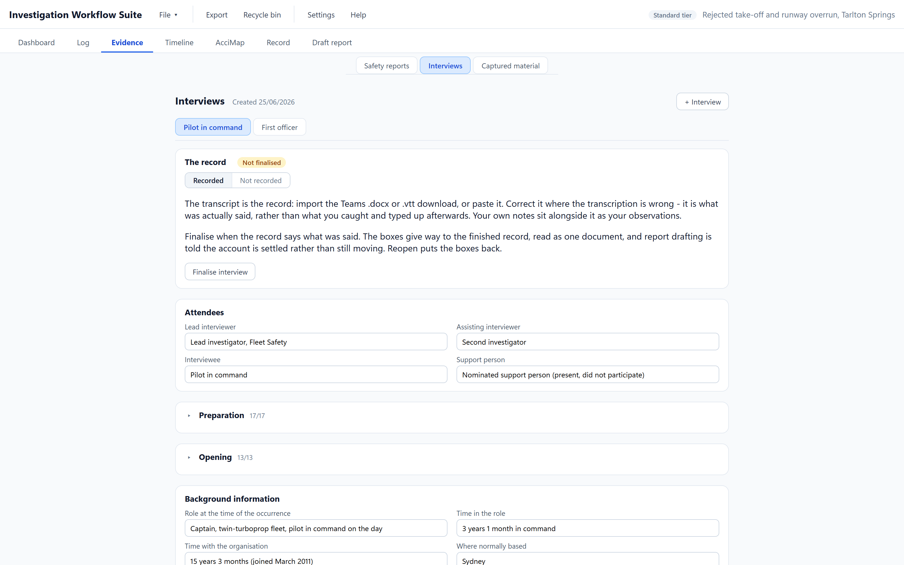
The record section opens with a badge reading Finalised or Not finalised, so an interview's status is visible without opening it. Below the badge sits Attendees - Lead interviewer, Assisting interviewer, Interviewee and Support person - then the collapsible checklists Preparation and Opening, answered Yes, No or N/A the same way as the investigator's checklist, and Background information for whatever sets the scene before the account itself.
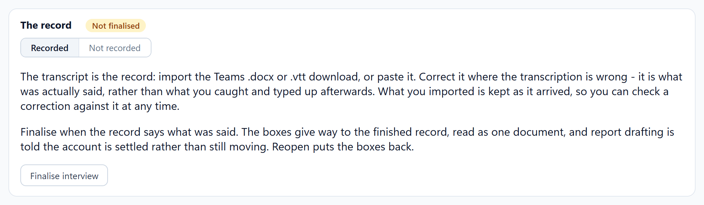
An interview here is a record, and the app asks one question about it first: was it recorded?
Recorded - the transcript is the record. Import transcript… brings in the Teams .docx or .vtt download, or paste it straight in. It is what was actually said rather than what you caught and remembered. Correct it where the transcription is wrong, because Teams mishears names, readbacks and technical words, and a record nobody may fix is worse than one they may. Your own notes sit alongside it as your observations.
What you imported is kept exactly as it arrived, under Original transcript above the box you type in. You are correcting a working copy; the source stays where it is, so a correction can always be checked against what the recording actually produced. The card says whether the working copy has moved since the import, and Show original transcript opens the text itself. Nothing edits the original, and only the corrected copy is finalised, exported or read when a report is drafted - a mishearing you have already fixed must not come back as evidence. Remove transcript takes both away, since a source with nothing left to compare against is only clutter.
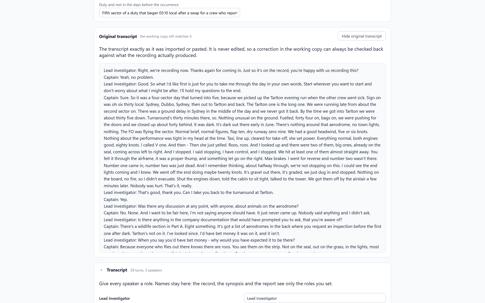
Not recorded - your notes are the record. Write them up while the interview is fresh. If it turns out there was a recording after all, importing a transcript switches the interview to Recorded.
You write the interview up in three windows. Free recall is what the interviewee told you in their own words, before you asked anything, in the order they told it. Additional questions is what you asked once the free recall was finished, and what they answered. Follow-up questions is what is still open: what to put to this person again, or to check with someone else. Under them is your own notes box, for what you observed rather than what was said. Where the interview was recorded the transcript is the record and the three windows wait behind Add your own notes, for your own additions to it.
Give every speaker in a transcript a role. The names stay in that box: the record and the report see only the roles you set. A speaker you leave unmapped still reaches the record, but as an unidentified speaker rather than by name - dropping their turns would lose evidence, and keeping the name would put it in the report. The mapping is deliberately yours to make: a model that guesses which speaker was the captain can attribute a remark to the wrong person, and nothing downstream would catch it.
Where the interview was run by another investigator, add their notes with Add notes from another investigator rather than pasting them into your own box, so whose account is whose stays clear in the record and in drafting.
Investigator's notes, at the foot of the record, has its own small toolbar - B, I and • List - for notes written in your own words rather than in the structured windows above, formatted enough to stay readable without being another document to maintain.
Finalising, and reading the record back
Finalise interview when the record says what was said. Report drafting is told the account is settled rather than still moving, and the page stops being a form: the boxes give way to the record itself, read as one document - who was interviewed and when, the background you noted, then the corrected transcript or the three sections in order, then your own notes, with anything you left empty simply not there.
From then on, clicking the interview opens that document straight away rather than the form it was filled in on. A recorded interview carries a long transcript and a page of notes, so a small control above it chooses which to read: Transcript, Notes or Both, which is where it opens. The original transcript stays reachable under the document for comparison. An interview that was not recorded has only its notes, so no control is offered.
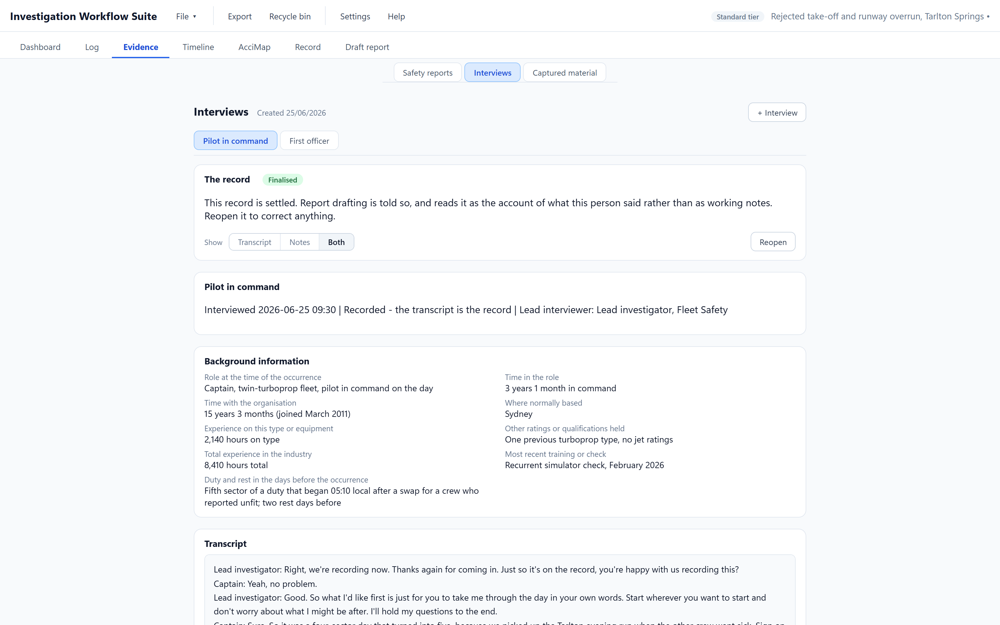
Reopen puts the boxes back, and is the only way to correct a finalised record: the lock is there so an account cannot drift underneath a draft that already quotes it.
Captured material
Evidence pasted into an object's form, or captured from the timeline or directly, is held once: it shows here too, in one grid, grouped by where it lives, by lane, or by kind, so you see what rests on what without leaving the map. The grid runs newest capture first, within each group, so the file you just dropped in is the one you see. Each item is a card to read, not a row of boxes to type in: the capture, its caption, why it matters, its category and reference, and what rests on it, with a jump to its owner: clicking that takes you to the object on the acci-map, brought into view and flashed, so you can see at once where the item is used. A text capture renders as formatted text rather than raw markdown, so a pasted quote reads as an indented extract and bold wording reads as bold. The cards themselves are read-only: Edit opens the item's own form, at the same 90 per cent of the window as an object's, where the caption and significance have room to be written in and the capture stays in view beside them. The capture is never editable, because it is what was captured. A file is not shown in the app at all: clicking it gives its name and size and an Open button, which writes a copy into the investigation folder's evidence subfolder, beside exports, and opens it in whatever this computer uses for that kind of file. Your own PDF reader beats anything the app could show you. A file kept beside the investigation rather than inside it (see Settings - Evidence - Dropped files) says so under its name, with its size, and opens where it already sits; if it is not there - an .sfm passed on without its folder - the card says "attachment not found" rather than failing when you click Open. Finalise settles an item and the card stops offering Edit; Reopen is the only way back in. Unlink, in the form, takes the item off the object you opened it from and leaves it here, in this view. Captured material also files by category, shown as sub-tabs. Only categories something is filed under appear; "Show all" reveals the rest greyed out, where they work as a prompt - nothing under CCTV yet, on an occurrence that happened in view of a camera.
The category list itself is edited in Settings - Evidence - Categories: add, rename, reorder, or remove one, or reset back to the built-in list. An item always keeps its category as its own text, so renaming or removing one here only changes what the picker offers for the next item filed, never material already captured, and typing a category that is not on the list still works - it is kept with that item and shown for it.
An image or a text extract can also go into the report. Its form carries one tick, Include in the report as a figure, off until you set it, and the card then shows a Figure marker so you can see at a glance which captures are headed for the document. A dropped file gets no tick, and its form says why: there is nothing in a file that can be put on a page, so capture the page you want as an image instead. A ticked capture is numbered in the order the report argues the objects the captures belong to, so Figure 1 is the first one a reader meets, whichever kind it is, and its caption and reference are what print under it. An image prints inside a thin frame with the caption below; an extract prints as the words themselves in a frame of the same weight, quoted lines set in behind a rule, with the reference as a source line under them. Write the caption as you want it read, because that is the wording that goes into the report.
The application holds no recordings. Audio, CCTV and recorded data arrive as text somebody typed, so a CCTV item is a time and what happened at it, with a screenshot if it helps. That makes one distinction worth stating on every text extract, and each one carries it: Verbatim for the source's own words - a transcript, a quotation from a manual, the text of a message - and My description for your account of what you watched or heard. A report may quote the first. The second is already your interpretation, so a draft will summarise it and never put it in quotation marks or attribute it as anyone's speech. Anything you have not marked is treated as a description, because putting your words in someone else's mouth is the mistake you cannot defend and a reader cannot detect.
Group by, above the grid, chooses how it is split: Where it lives, Lane, or Kind. Category sub-tabs run across the top, starting with All, each carrying a count of what is filed under it; a category nothing is filed under yet sits greyed out behind Show all.
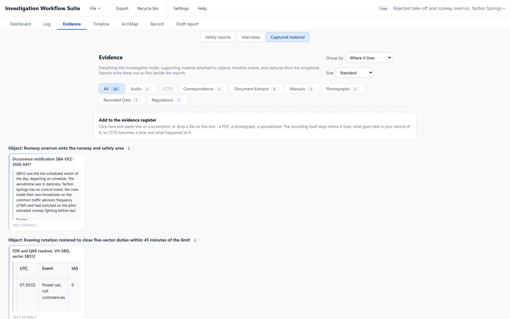
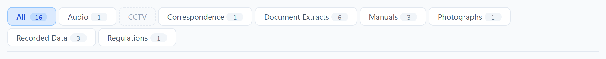
Add to the evidence register is the capture zone itself, sitting above the grid on All; opened from a category sub-tab it reads Add to <category> instead, and anything that lands there is filed under that category from the moment it is captured. It takes a pasted image, a pasted block of text, or a file dropped in from outside the app, the same as the capture panel on an object's own form.
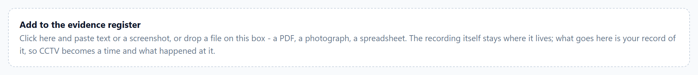
The evidence item form
The capture sits at the top, exactly as it was captured: it opens full size when clicked and is never editable here. Caption and Significance are the free-text fields, with room to write properly rather than in a single line. Category offers the list set up in Settings and also takes a word that is not on it, which is kept with the item either way. Reference is wherever this item is filed, cited, or numbered outside the app.
On an image or a text extract, the tick Include in the report as a figure is here too, as described above. On a text extract, choose My description or Verbatim to say whose words these are, and use Summary for the report for the wording a draft will actually use for this extract.
Unlink sits at the foot only when the form was opened from an object, and takes the item off that object without removing it from the register. Cancel closes the form without saving; Save writes your changes and closes it.
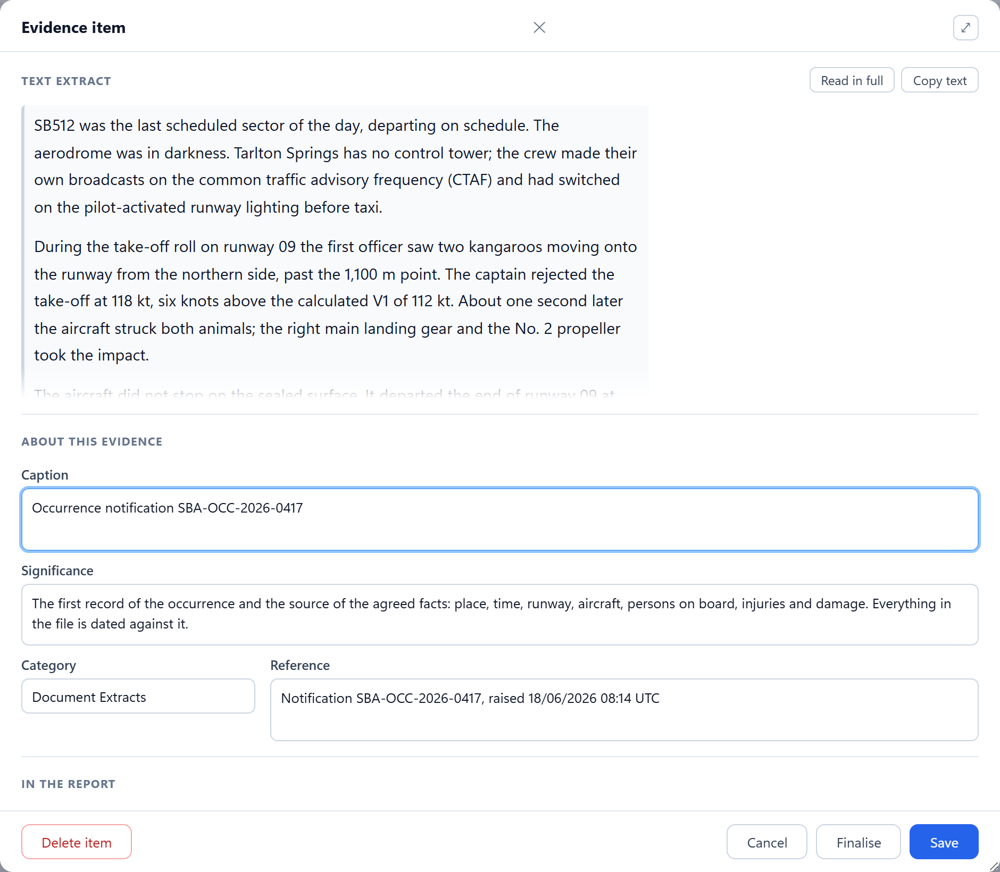
Timeline
The investigation's sequence of events: when each thing happened, where that time came from, and how firmly it is held. It is both a working tool and a deliverable. On screen it is a drawn timeline you arrange, with a table under it you edit like a spreadsheet, and the two are views of one record, so a correction in either moves both. At the end it is the sequence-of-events table in the report, and the chronology the drafting model is given.
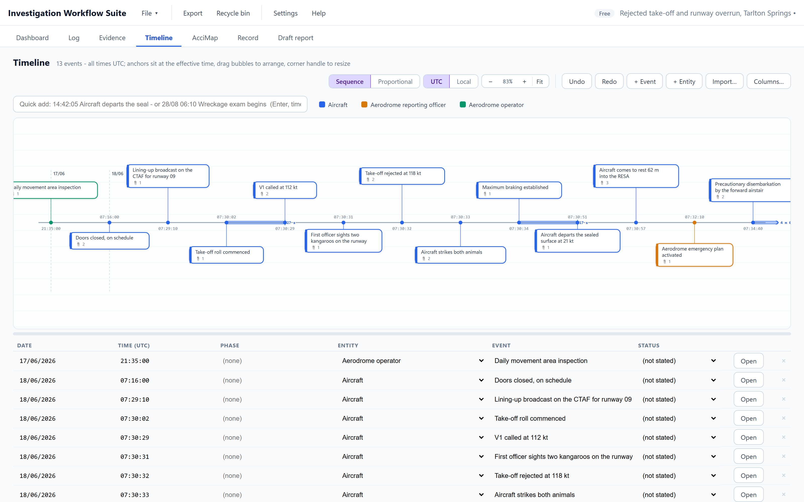
Entering a time
Type a time the way you would write it. The app reads 18:05, 1805, 18:05:30, 180530, about 1805 (or ~1805, c. 1805), an optional leading date like 28/08 or 28/08/1998, and a date on its own. What you type also says what you know: typing 18:05 records a time known to the minute, and the report writes it as 18:05 rather than inventing a 00 on the end. Typing 18:05:30 records a recorded stamp, and about 1805 records an approximation, which reads as "about 18:05" wherever it appears. The Known to picker on the event card sets the same thing by hand, and adds Day only for an event you can place on a date but not in a clock. An investigation that has never touched this reads to the second everywhere, exactly as it always did.
Sources rarely agree, so the card asks what the recorded time is expressed in: UTC (the default, no correction needed), Local, or Other for a source clock or a device time. Local and Other then ask two things. Which clock names it (AWST, UTC+09:30, ship's clock, FDR clock), and the correction to UTC is the signed adjustment, like -8:00 for a zone or -0:02:14 for a clock error. The card shows the calculated time as you work. The corrected time drives the ordering and every output, while the recorded time and its correction survive into the report, so the trail can be audited: "06:45:30 (recorded 06:47:30 ARFF watch room clock, correction -0:02)". Corrected events are starred on the axis and chipped in the table. The whole investigation can also be worked in local time rather than UTC with the clock toggle, which changes the labelling everywhere including the exports; per-event corrections work either way.
What an event records
The event itself is the one line that appears on the bubble and in the sequence; detail is what happened more fully, including anything uncertain about the time. Entity is who or what the event belongs to, and gives the bubble its colour. Duration or end time turns a point in time into a span. Location is where it happened: a position, a berth, a chainage, a runway.
Two fields say how much weight the entry carries. Kind of source is what sort of source it is (recorded data, voice recording, a traffic service record, surveillance, CCTV, physical evidence, a maintenance or operator record, an interview or account, a document), offered as a list you can type over, and source of information is the specific reference that lets a reader go and check it. They print together: "[Source: Recorded data: FDR channel 12]". Status says how firmly the entry is held: established for something supported by a recorded or physical source, reported for an account that has not been independently confirmed, and estimated for a time you derived yourself. It is blank until you set it, and a blank one claims nothing.
Narrative is the event in report voice, one or two sentences. The occurrence section of the report is built from these; an event left blank there renders as its plain timeline line instead, and the Record page shows it as a gap to fill.
The event card
+ Event opens a blank card; Open on a table row or a double-click on a bubble opens that event's own. The fields run in a fixed order: Date (DD/MM/YYYY), Time (UTC), which reads Time as recorded once the basis is anything but UTC, then Known to and Entity, then Time is expressed in with its three choices, then Which clock and Correction to UTC where the basis is Local or Other, then Effective time (UTC), which is worked out from all of that and cannot be typed into. Next come Duration or end time, Kind of source, Status, Source of information, Location, Phase, Event and Detail, then Narrative (report voice). Where this investigation has added its own columns, they come next as This investigation's own columns, then Objects on the map this event bears on, with Link an object… to add one and a × beside each to take it off, and Supporting material last. At the foot, Delete event removes the whole entry, and Done closes the card.
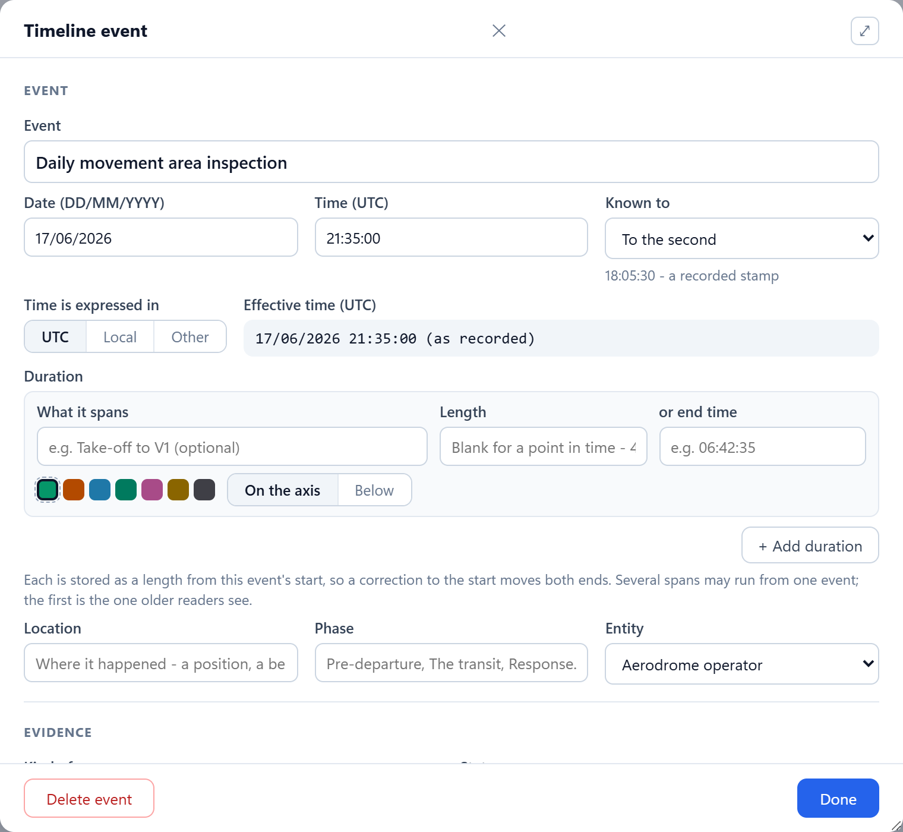
Phases, and the order events are read in
Phase is a free label for the part of the sequence an event belongs to: pre-departure, the transit, the occurrence, the response. Set it on the card or in the table, and the chronology in the report, the exports and the drafting collation breaks into subheadings wherever it changes. Phases already in use are offered as you type, so one phase does not end up with four spellings. A phase that comes round again gets its heading again: the sequence is never reordered to suit the grouping, and an investigation that uses no phases prints with no headings at all.
Order follows the times, always. Correct a time and the sequence re-sorts; drag a bubble and only its layout moves, with the stalk still pointing at the true tick. Where two events share the same corrected time, and only there, the table offers arrows to put them in the order they actually happened.
Linking to the map and to the evidence
An event can carry supporting material the same way a map object does: paste or drop it in, and it is filed once in the evidence register and linked here. Bubbles with material show a paperclip, and binary captures are written out beside the report when you export.
An event can also be linked to the objects on the map it bears on, which is you saying that this is the moment that factor acted. Two things follow. The chronology names the factors beside the event, so the sequence and the analysis cannot be read apart, and the record check that looks for a causal arrow pointing backwards in time reads the linked event first, ahead of the weaker readings it otherwise has to fall back on (a shared document, a time written into the evidence text, or where the box sits on the canvas).
Your own columns
Every organisation keeps one or two things on a timeline that no application can guess: an occurrence reference, a flight phase code, a crew position. Columns… on the toolbar adds them to this investigation. A column has a name and a kind, where text takes anything, number refuses what is not a number, and choice offers a list you can still type over. They appear as columns in the table, as fields on the event card, and in the chronology as "[Occurrence reference: 2026/0412]". They belong to the one investigation, so adding one needs no new version of the app, and deleting one says how many events carry a value before it takes them with it.
The Columns dialog
Columns… on the toolbar opens it, headed Timeline columns. Each column already in the investigation lists its name, its kind (Text, Number or Choice), the choices it offers where the kind is Choice, and Delete, which first says how many events already carry a value in that column before it takes them with it. Below the list sit a new column's own name and kind, beside Add column, and Done closes the dialog.
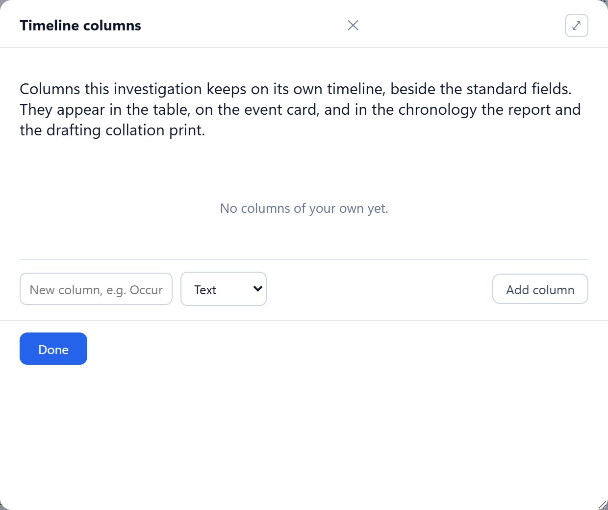
Working the timeline
The toolbar carries the controls you reach for most: a spacing choice of Sequence or Proportional, a working-clock choice of UTC or Local, Undo (Ctrl+Z) and Redo (Ctrl+Y), + Event, + Entity, Import… and Columns…. Under it sits a quick-add box, reading "Quick add: 14:42:05 Aircraft departs the seal - or 28/08 06:10 Wreckage exam begins (Enter, times UTC)", the inline way to log an event as it is called out rather than opening the card. Below that, the entity legend shows one chip per entity in use; clicking a chip opens its own small editor, with the name, the colour swatches, a count of how many events use it, Delete entity and Done.
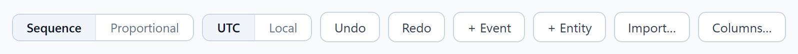
Add an event with + Event for the full card, with the quick-add line (21:43:52 Aircraft departs the sealed surface then Enter), or by typing in the table. A new event inherits the last one's phase, since a sequence is usually entered a phase at a time. Create entities with + Entity; each takes a colour, its events' bubbles match, and clicking a legend entry renames, recolours or deletes it (deleting warns how many events use it and leaves those events in place with no entity). Bubbles resize from their corner handle, and every timeline edit is undoable.
The spacing toggle switches between Sequence (even spacing, readable, not to scale) and Proportional (true time gaps). The canvas pans and zooms like the map: drag empty canvas to pan, Ctrl+wheel to zoom at the cursor, wheel to travel along the axis, and Fit to frame everything. Timelines can span days, weeks or months, and day changes are marked on the axis with dated dividers. In Proportional spacing a span is drawn as a bar beside the axis and concurrent spans stack into rows, which is how an overlap becomes visible; in Sequence spacing the length appears as text on the tick instead, because there the position is the event's order, not its time.
At the canvas's corner a zoom control gives the same reach with your hands off the mouse: − and + step the zoom, the reading between them shows where it sits, and Fit returns to the whole timeline. A bubble carrying supporting material still shows its paperclip here, and nothing about reading the canvas changes once you are this close to it.
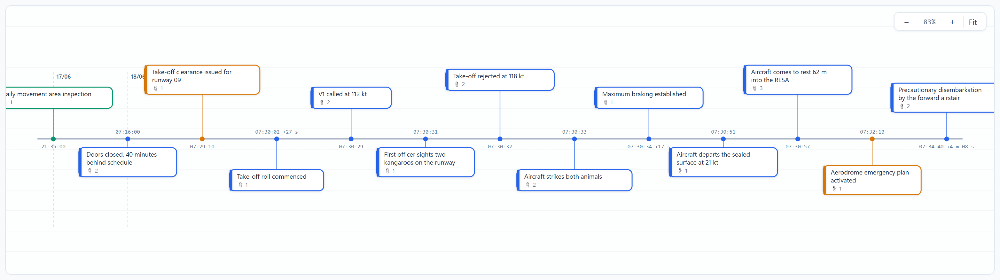
The table underneath carries the same events as plain rows: Date, Time (UTC), whose heading follows whichever clock the investigation is working in, Phase, Entity, Event and Status, then any columns this investigation has added of its own, then the row's own actions. Move earlier and Move later appear only where two events share a time, for the ordering arrows already described above; Open takes you to that event's card, and a × at the end deletes the row's event outright.
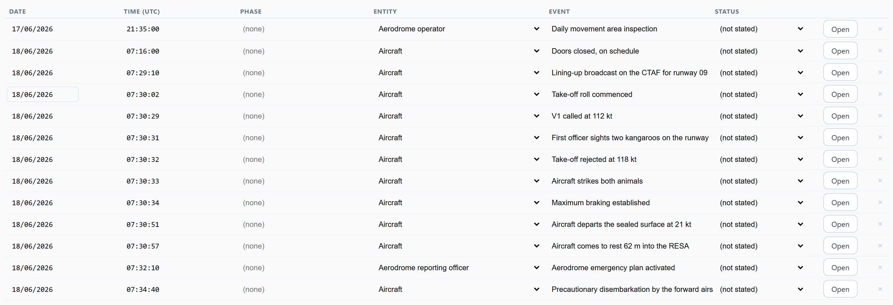
A chronology already held in a spreadsheet comes in through Import…: choose a .csv or .xlsx, confirm what each column holds (the app guesses from the headings, including source kind, status, location and phase), and see exactly what will land, including any row it cannot read, before committing. A cell holding 18:05 imports as a time known to the minute, the same as typing it. Only the rows are taken; the file itself is not kept.
Where the timeline goes
Into the report as the sequence of events, under phase subheadings where you use them, with the correction trail, the status, the location, the source and your own columns on each line. Into the exports as a PNG of the drawn timeline, and into the report's appendix as that same image. Into the drafting collation as the same chronology, with each event's linked extracts beneath it, so a model writing the occurrence section is working from the record rather than from a summary of it. And into the summary, which takes the occurrence date from the timeline.
A worked example
A ferry grounding. The investigation works in UTC, and the vessel's clock was local time, ten hours ahead. For the plotter freezing you would enter the recorded time 18:07:06, set the basis to Local, name the clock AEST, enter the correction -10:00, and leave the precision at the second, because it came from the plotter's own event log. Kind of source is Recorded data, the source is "Plotter internal event log, cause code 0x51", the status is established, the phase is "The transit", and the event is linked to the map object for the unreported plotter defect. The deckhand's account that he was sent to collect fares is a different kind of entry: enter it as about 1804, kind of source Interview or account, status reported. The report then reads "08:07:06 [Bridge] Chart plotter display freezes and does not recover (recorded 18:07:06 AEST, correction -10:00) (established)", and the deckhand's line reads "about 08:04 ... (reported)", which is exactly the difference between the two that a reader has to be able to see.
AcciMap
The safety factor map itself, labelled AcciMap in this edition - the canvas, objects, lanes, and arrows described in the sections above.
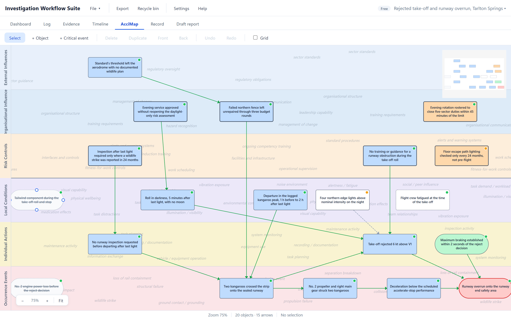
The toolbar
Three placement tools sit at the left of the toolbar: Select, + Object and + Critical event. Only one is ever active at a time, and the toolbar shows which. Select is the ordinary tool, for clicking and dragging objects already on the map. Arming + Object or + Critical event does not place anything straight away: the tool stays armed, and the next click on the canvas is where the object lands.
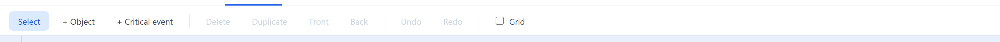
Delete and Duplicate stay greyed out until something on the map is selected. Front and Back move the selected object above or below whatever it overlaps, for the times two objects sit close enough to hide one another. Undo and Redo step back and forward through the canvas's own editing history, and the Grid tick switches the alignment grid on and off.
Placing an object
Click + Object or + Critical event to arm it, then click anywhere on the canvas to drop the object there. The tool stays armed afterwards, so several objects can go down in a row without re-arming it each time. Switch back to Select, or click the armed tool again, to stop placing.
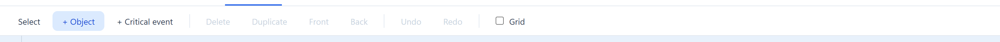
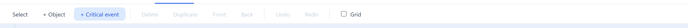
The zoom and status panels
Two small panels sit over the canvas. Bottom left, the zoom panel: − and + step the zoom out and in, the reading between them shows the current percentage, and Fit reframes the view so every object is visible at once.
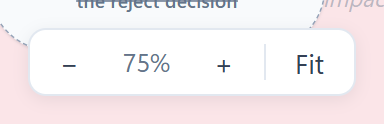
The status panel repeats the zoom and adds a running count, read as N objects · N arrows, plus whatever is currently selected: No selection, Selected: followed by the object's title, or a count once several objects are selected together.
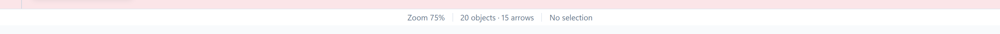
The object form
Double-click any object to open its form. The header reads Evidence, with the object's current classification shown beside it, a choice of the Evidence panel or the Analysis panel, and a button that resets the form back to its default size and position if it has drifted somewhere awkward. At the foot of the form sit a Finalised tick, Cancel, and Save.
The Evidence panel
Title names the object. Hypothesising an event or condition that offers a choice of Increased risk, Decreased risk or Neutral, setting which way the object leans before any test below it is answered.
The tests themselves follow in order: Existence, then Influence, then Importance, each one appearing once the test before it is answered. The first asks "Did this event or condition actually exist or occur?"; "Did it influence this occurrence?" follows once Existence passes; "Is it important enough to address anyway?" follows if Influence fails. Each test carries a "?" beside its heading for guidance on what counts as evidence, a choice of Conclusive or Argument, the text the test rests on, a confidence slider with the probability word it reads as shown beside it, the buttons Untested and Insufficient evidence for where neither answer is ready yet, and a comment field. Conclusive mode takes one body of evidence; Argument mode splits the box into evidence for and evidence against, side by side, for a test that is genuinely contested.
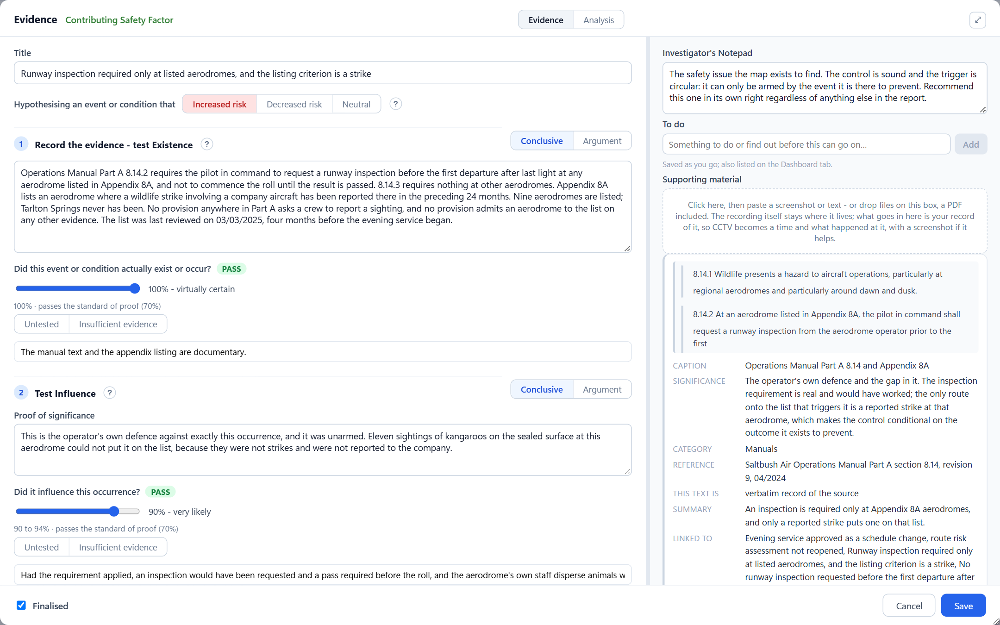
The notepad and to-dos
The right-hand column carries the Investigator's Notepad, a free-text box for working notes that never reach a report, and a To do box: "Something to do or find out before this can go on…", with its own Add button. Anything added here also shows on the Dashboard, so a to-do raised from an object stays visible without going back to find it.
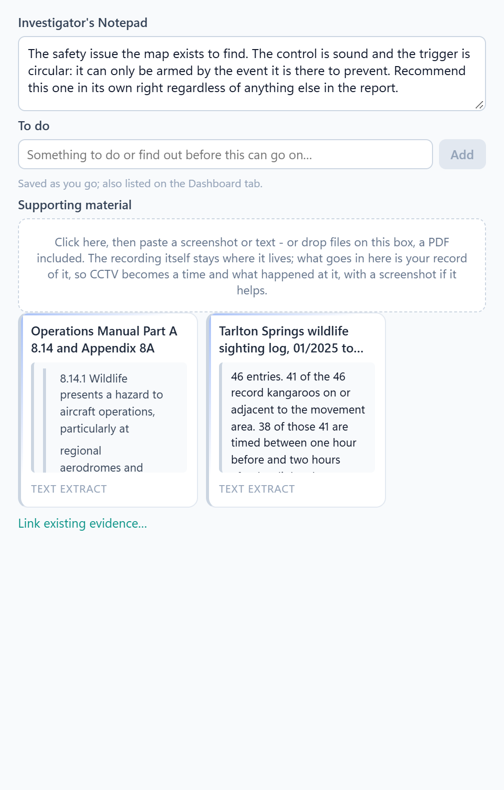
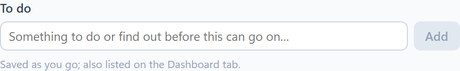
Below the notepad sits Supporting material, the same capture panel described earlier for attaching evidence, with Link existing evidence… for material already held elsewhere in the investigation, and Delete on a card to take it off this object.
The Analysis panel
On the left, Analysis: the record (Outcome and consequences: the record, on the critical event) reproduces the object's record exactly as the Record tab would render it, read-only, so the paragraph beside it is always written against what a reader actually sees. On the right is the paragraph itself, with a status badge, and Finalise, Revert to drafted and Clear. Where AI access is switched on, an Audit action sits beneath them.
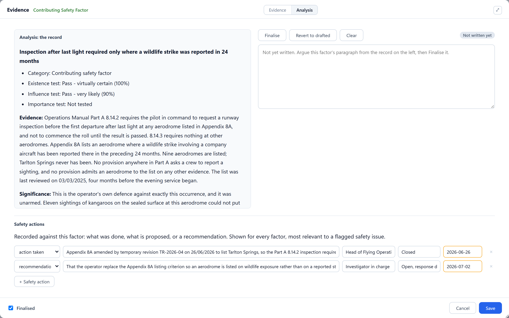
At the foot of this panel is Safety actions: one row per action, each with its kind, "What was done, or is proposed", "By (role)", Status and a date, plus + Safety action to add another.
Record
The investigation as recorded: every section assembled straight from what has been entered, in the order and under the headings of the style you choose. It is not a drafted report, which is a different document written on the Draft report tab. Read it here, check it, and export it. Change the style and the page re-titles and re-orders itself into that style's layout; the line under the header names the layout in force and lists the sections it produces, in order, so the effect of the picker is visible without scrolling the document. Every section renders straight from what is already recorded on the objects it is about: a factor's accepted analysis paragraph, an event's narrative sentence, the derived summary and findings. Where nothing is written yet, the section shows the outline block instead - the evidence, tests, and causal links a paragraph would have to argue from - marked plainly as not yet written, with a link that opens the object and takes you straight to where you write it. A summary at the top counts what is outstanding across the whole report, and it recomputes the moment anything changes. Beside the outline, Record checks lists what the record itself can already tell you is wrong or incomplete - a missing outcome, a factor with no path to the critical event, a recommendation with no safety action, an Existence note worded as a measured fact while its own grading sits below virtually certain, an arrow that points backwards in time (read from the times recorded against the objects themselves where there are any, and only from where they sit on the canvas when there are not), prose that has fallen out of date - grouped by severity, each one a link to the object it names. Nothing here needs a model: this tier is a complete product on its own, and it is also what a whole-report draft in the Draft report tab will start from. Export the record as Word writes the outline as it stands to Word and markdown, gaps included, so nothing about the state of the investigation is silently dropped.
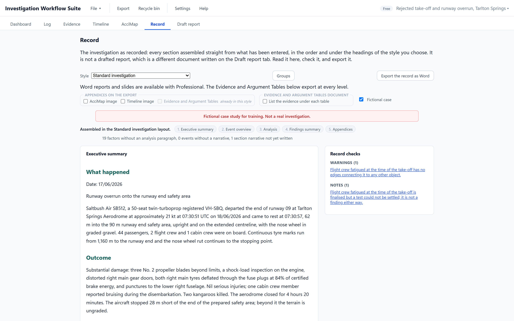
Where the page discusses the objects from the map one after another, each object is a card with its title, and its classification, above the card rather than inside it, so it is plain where one object's discussion ends and the next begins. That is how this tab renders the document; the document itself, and everything exported from it, is unchanged.
Also exported, below the record, previews everything else that leaves with it. The E/I/I test tables are there in full, one collapsible table per object under its lane, with Export E/I/I tables as Word beside them: the Existence, Influence and Importance results with the text recorded for each, which is the working paper behind every finding. That Word file is a document in its own right: a cover, a contents page listing every lane and every object under it, the map on a landscape page, then each object's table under its own heading and kept whole on one page wherever it fits. Tick List the evidence under each table beside the export to add, under each object's table, a line per attached item naming where it came from rather than the material itself. The AcciMap and timeline images are named there as a placeholder, with no preview and no button yet.
This tab shows the record and nothing else: there is no switch to a drafted version and no check of drafted text. The Draft report tab's finalised sections, assembled in the style's order with a marker on any section not yet drafted, not finalised, or out of date, are read, checked and exported there, in the Whole report area under the sections.
Groups, beside the style picker, is where the analysis section's cross-factor argument lives - the linking paragraph that says how a set of factors relate to each other and lead towards the critical event, which no single factor's own paragraph can carry. With no groups defined, the analysis falls back to one group per lane, shown in the editor read-only with no linking prose; Propose by lane and Propose by mechanism turn that into real groups you can rename, reorder, and move factors between (a factor left in no group renders last, under "Other safety factors"), each with the same Draft, Finalise, Revert and Clear controls as a factor's own paragraph. Clear groups returns to the lane fallback. Context, and any style section written as prose with no objects behind it, gets the same treatment: click its "Not yet written" gap to open a narrative editor drafted from the section's own guidance and the collation it declares.
The controls at the top
The style picker sets which style's layout the page assembles into, as above. Groups opens the analysis groups panel, covered below. Export the record as Word writes the outline as it stands, gaps included, to a Word file and a markdown copy; the drafted report is exported from the Draft report tab. Where the chosen style is the executive one, Export slides (.pptx) sits beside it and writes the same content as a slide deck instead. The appendix ticks beside these controls are the same ticks the Draft report tab carries under Appendices on the export: set them here and the choice applies to both tabs' exports alike.
Last in the row, Fictional case marks this investigation as a case written for teaching. While it is ticked, a banner across the top of the Record tab shows the fictional-case label, and every document the investigation exports carries the same label in its running header and its footer. The tick is saved in the investigation file, so the case stays marked on any machine it is opened on; the wording of the label is set in Settings, under Documents, Fictional label. The worked example and the case studies are marked this way.
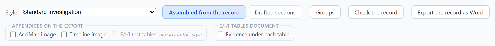
Record checks
Record checks, down the right of the page, lists everything the record itself can already tell you is wrong or incomplete, grouped under Errors (n), Warnings (n) and Notes (n). Each entry that names an object is a link: click it to open that object at the point the problem sits.
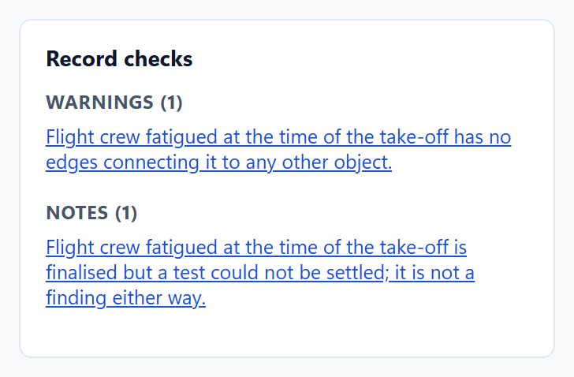
Also exported
At the foot of the page, Also exported previews everything that leaves with the record besides the report body. The E/I/I test tables card holds one collapsible table per object, grouped under its lane, with Export E/I/I tables as Word beside it to write the whole set out as its own Word document: a cover, a contents page listing every lane and object, the map on a landscape page, then each object's table kept whole on a page of its own. Tick List the evidence under each table to add, under each object's table, a line per attached item naming where it came from rather than the material itself. Beside that card, a second card names the AcciMap and timeline images; for now it is a placeholder, with no preview and no button yet.
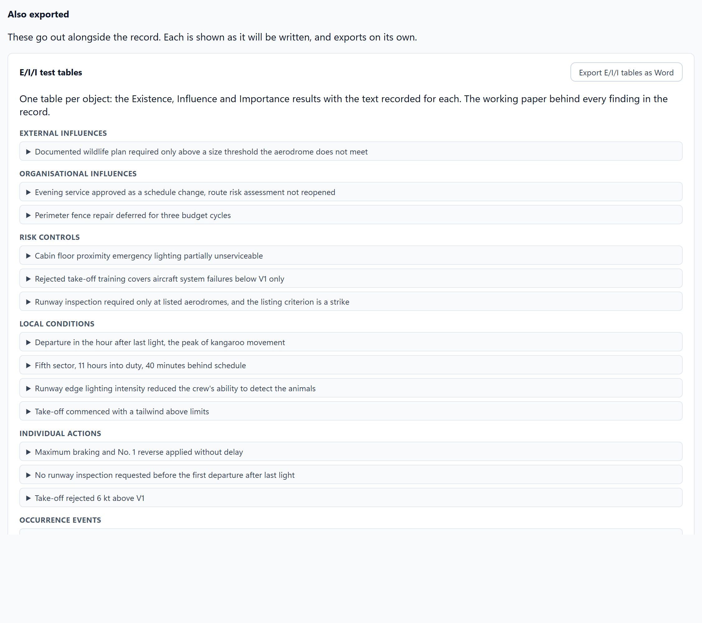
Analysis groups
Opening Groups shows the Analysis groups panel. Propose by lane and Propose by mechanism each build a set of groups for you to adjust; Clear groups drops them back to one group per lane with no linking prose. Within a group, its title field renames it, Move up and Move down reorder it against the others, and the picker on each factor moves that factor into a different group. Done closes the panel and returns you to the record.
Draft report
The report is built here, one section at a time, and it lives in the investigation file rather than only in an exported document. The page runs in the order the work does: Style at the top, then Sections, then Check and export at the foot. Pick a style, then work through its sections: Draft this section, read it, correct it, and Finalise it. The strip in the Sections band is the flow: the style's sections as connected steps, in the order they are written rather than the order they print, each showing where it stands (not drafted, drafted, audited, finalised, or out of date because the record has changed), its word target, and one sentence saying what that section is for. The step marked Next is the first one still to draft and carries the button to start it; clicking any step opens it in the editor below.
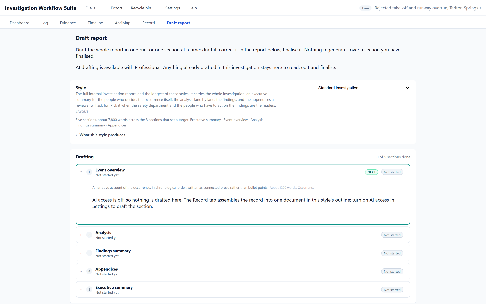
The model's draft is a first version built from the record, not the report: the investigator works from that head start, reads it against the record, corrects what is wrong or overstated, and finalises it before anything is published under their own name. The Audit action below is an extra check on top of that reading, not a replacement for it.
The Style band
What this style produces, an expandable line under the picker, open until the first section is drafted, is the longer version: every section of the chosen style with an explanation of what goes in it and which parts of the record it is drafted from. Both it and the strip are read out of the style itself, so an organisation's own style describes itself here the same way the shipped ones do.
Under the picker itself is the short version: what the chosen style is for, in the style's own words, and a line counting its layout, the number of sections and what they add up to in words, followed by the section names in printed order. Where the app ships a worked example drafted in that style, an Example (PDF) link sits on the same line and opens it in your PDF reader. A style with no example simply has no link.
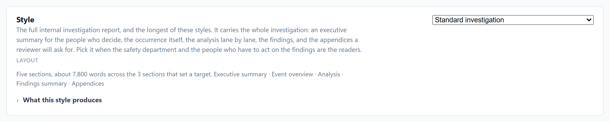
The style decides the sections, their order, and what each one may be drafted from. These are the styles this edition ships with:
- Standard investigation. The full investigation report, and the longest of these styles: executive summary, event overview, PEEPO analysis, findings summary and appendices. Written for the safety department and the people who have to act on it.
- Preliminary investigation update. About three pages for executives while the investigation is still running: what is known, what is still being looked at, and what is already being done. Carries no findings.
- ATSB-style final report. A full-length public report in the ATSB shape: investigation summary, the occurrence, context, safety analysis, findings, then safety issues and the action taken against them. Written for an industry readership. Modelled on published ATSB reports (CC BY 4.0).
- NTSB-style probable cause report. A full-length public report in the NTSB shape: factual information, analysis, then conclusions carrying the findings and a single probable cause statement with its contributing factors, followed by recommendations. Modelled on published NTSB reports (US government work, public domain).
- AAIB-style causal and contributory factors report. A full-length public report in the AAIB shape: synopsis, factual information, analysis, then conclusions listing the findings and splitting causal from contributory factors, followed by safety action and recommendations. Modelled on published AAIB reports (Crown copyright, Open Government Licence v3.0).
- Executive brief. Three to four pages of plain language for the people who decide: what happened, why it happened, what was found, and what is being done. No factual detail beyond what carries the argument.
The Sections band
Sections are drafted individually for two reasons. You can redraft one section without rerunning the whole report, which on a local model is the difference between a minute and twenty. And nothing regenerates over the top of your edits: a section you have approved is never rewritten. Instead, each section is given the sections already finalised before it, so it follows on from your approved text rather than repeating it. Working in the style's own order therefore gives the best result.
The actions on the whole report sit where they belong in the order of work. Draft whole report heads the section list, with the length target and where drafting starts from on the same line. Everything done to the report once it is drafted is in the Check and export band at the foot: Check, Repair once an audit has run, and Export. Each carries a line saying what it does, and the one action that is next is the only one drawn as the primary button, wherever on the page it sits, so the page always points at the same step the strip marks Next.
The Sections band's own header carries a counter, such as "3 of 5 finalised", so you can see at a glance how much of the style is settled against its total. Where AI access allows it, the same row carries Draft whole report, which reads Redraft whole report once a whole-report draft already exists, and Cancel the run in its place while one is under way.
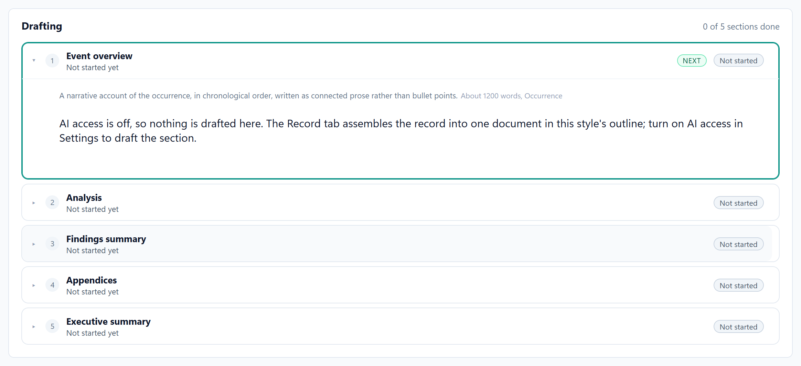
Below that header, each step in the strip shows its state as a plain label: Not drafted, Draft, Finalised or Out of date, alongside its word target and the one sentence saying what the section is for. The Next step carries Draft this section, or Start this section where AI access is set to Chat.
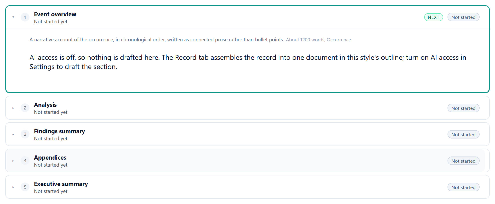
With an endpoint that has the context for the whole investigation, Draft whole report, at the head of the section list, does the opposite: the entire record goes to the model in one run (an outline, then every section against the full collation, a cohesion edit, and an adversarial grounding audit that checks every claim in the draft against the source material), so the report is written as one argument rather than assembled from sections drafted apart, fitted to the chosen length target without dropping established facts. The finished report lands in the Whole report area, and each of its sections also lands in the matching editor above as a draft, so you still read, correct and finalise it one section at a time. A section you have already finalised is never overwritten; the run log names any it kept. The audit appears in the audit panel and the record check runs as it does for a section draft, and any claim the audit marks unsupported or contradicted is the model's invention and must be fixed or cut.
The section editor
Opening a step from the strip puts it in the editor below. Draft this section starts it, reading Redraft this section once there is already a draft to replace, with Cancel in its place while it runs. Finalise accepts it, reading Finalise against the current record when the record has moved since the draft was made, so finalising is a deliberate choice against what currently stands rather than against what the model saw. Revert to drafted throws your edits away and goes back to the last model draft, and Audit this section runs the model audit over this one section rather than the whole report. A badge on the editor reads Finalised, Out of date or Draft, not finalised, so the state is visible without reading the strip above it. Preview swaps the markdown editor for the rendered document, and becomes Edit markdown to swap back.
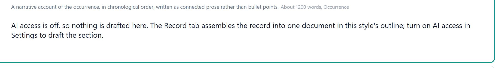
Sections are stored as markdown, because that is what the model writes, what the next section receives as context, and what the exporter reads. Edit it directly with the toolbar for headings, bold, italic, and lists, or press Preview to read it rendered as a document. Any bracketed marker, such as [NOT ESTABLISHED], is highlighted in the preview, since those are what must be resolved before a draft goes anywhere.
An argued section such as Safety analysis drafts a few factors at a time rather than as one request - by your approved analysis groups when you have set any, by lane otherwise - and the note under Draft this section says how many passes that is. What Draft and Audit actually do follows the AI access setting in Settings: off, they are hidden and you assemble the record into a document on the Record tab instead; Chat copies a prompt (one per pass, for an argued section) and takes a pasted reply back; Endpoint drafts straight into the section, in the same passes.
Length, beside Draft whole report, is a compact choice between no target, Concise, Standard, Extended and a custom word target, with the words and pages of the chosen one shown beneath it. It applies wherever a length target is asked for, and it is remembered on this machine rather than in the investigation.
Drafting starts from the assembled record: your finalised paragraphs and narratives marked to keep exactly as written, and the record's own outline blocks where nothing is written yet, built the same way the Record tab assembles it. That is the behaviour, marked From the assembled record (default) under Advanced. The other choice there, From the collated evidence only, starts from the collated evidence alone instead, the way drafting worked before the record view existed, which is worth a look only when comparing the two. A drafted section gets a mechanical Record check for free - each factor's category and confidence word checked against what its own test result actually says, and, for a Findings section, its categories checked against the derived classification. It also reads the prose itself: more than a couple of semicolons per thousand words is flagged as a sign the text has not been edited into full sentences, and a Findings bullet that negates its subject ("No assessment was likely recorded") is flagged too, because the term then qualifies what did not happen rather than the absence itself and the finding reads as its opposite - it belongs in front of the whole statement instead ("it is likely that no assessment was recorded"). It runs automatically once an endpoint draft lands (never on a pasted chat reply, which is yours to read before it lands), and Check the record, in the Check group, runs it on demand over everything currently drafted. It is mechanical, not a model opinion, and sits separately from the model audit above it.
A Findings section whose list contains a finding graded at a band that may be stated with no hedge at all (by default, virtually certain) opens with one sentence saying so: "A finding stated without a likelihood term was established as fact." It is there for the reader, so a plain finding among hedged ones reads as a deliberate statement of fact rather than a missing word, and the Record tab, the Word export and the drafted report all carry it in the same place. It is fixed wording: a drafting pass is told to reproduce it exactly, and the record check and the model audit both leave it alone rather than reading it as one of the findings. Where every finding carries a term, the sentence is left out, since there is nothing to explain.
The Check and export band
At the foot of the page, Check and export groups its controls by what they do. The Check group holds Audit against the record and Check the record. Repair, offered once an audit has run, holds Repair against the audit. Polish holds Polish the prose. Export holds Export report as Word. Each one carries a line saying what it does, and whichever is next in the order of work is drawn as the page's primary button, wherever it sits.
Audit against the record, beside it in the Check group, is the model pass over the assembled sections rather than one of them: it checks the report against the whole investigation, which is the only way to catch two sections that are each defensible on their own and together say different things. On Endpoint it runs straight away; on Chat it copies the prompt and takes the verdicts back. What the audit flags is what Repair against the audit acts on, described under LLM drafting below, and Polish the prose is the step after it: the same meaning in better sentences, landed only once the checks and a fresh audit show nothing moved.
Export report as Word assembles the sections in the style's order into a Word document and a markdown copy. A section that is missing, unapproved, or out of date is still included, but carries a marker saying so, and the cover page records that the report is incomplete. Silently dropping unapproved work, or letting it leave looking finished, would both be worse than a marker you have to delete.
Appendices on the export, beside the export it changes, decides what goes out behind the report itself: an image of the accimap, an image of the timeline, and the E/I/I test tables. Each ticked one is appended after the report body under its own heading, in the Word document and therefore in any PDF made from it. The two images each take a landscape page of their own. The ticks are yours rather than the investigation's, so they stay put from one investigation to the next, and they apply to every report export, this tab's and the Record tab's alike, which is why the same ticks appear on both pages. An appendix with nothing to show, a timeline with no events on it, is left out rather than printed empty, and so is one the style already prints itself: where a style's own body carries the E/I/I tables, that tick is disabled and says "already in this style", rather than the report going out with the same tables twice under two lettering schemes. Beside the E/I/I test tables tick, an E/I/I tables document tick reading List the evidence under each table adds, under each object's table, a line per attached item naming where it came from rather than the material itself, the same option the Record tab's Also exported card carries.
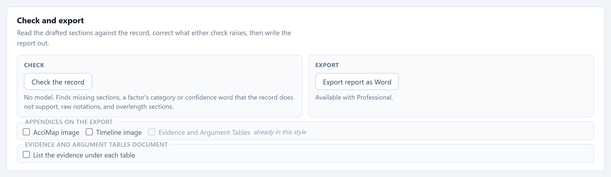
Figures travel with the report. An image you ticked on the Evidence tab goes in after the paragraph that first says "Figure 3", and where the prose never mentions it, at the end of the section that argues the object it belongs to; a capture no object claims closes the document in a Figures appendix. It prints at the text width inside a thin black border, with "Figure 3: your caption" under it. The drafting model is told the figure exists and what it shows, so it can refer to it by number, but whether the argument needs it is left to the draft and to you. In Word the number is a real caption field and every "Figure 3" in the text is a cross reference to it, so Insert Caption, Insert Cross-reference and a table of figures all work on what the app wrote, and adding a figure by hand renumbers the rest. The Record tab's assembled view and the Draft tab's preview show the figures in the same places, so what you read on screen is what the Word file carries.
A drafted section says "Figure 3" and nothing more, and what Figure 3 is gets settled again when the report is exported. So if you tick another image onto a factor the report argues earlier, every number below it shifts and sentences written about one picture now point at another. The record checks say so: a section drafted against a different numbering is reported as out of step, naming what each number now points at, and you redraft the section or correct the numbers yourself. Nothing is silently rewritten, because only you can tell which the sentence meant.
The whole report
Whole report, assembled from the sections, sits under the section editor and shows the finalised sections in the style's order as one document, exactly as Export report as Word writes them. A section not yet drafted, not finalised, or out of date carries a marker saying so. While no section is drafted for the style it says so in one line instead, with how many object analysis paragraphs are finalised; those are read in the Record tab's assembled view, which shows the record and never the drafted text. The checks that compare drafted text with the record belong to this tab alone, in the Check group below.
Whole report (smoothed), below the sections, edits your finalised sections together into one document: shared terms and tense, transitions between sections, repetition removed. It never adds, removes, or reweighs a finding, and it never replaces the section texts above it - the same Draft, Finalise, Revert and Clear controls apply, and it exports as its own file so it is never confused with the section-by-section report. It goes out of date the moment a finalised section changes underneath it, the same way any other drafted text does here.
The smoothing pass itself runs from Smooth the whole report. Once the smoothed text exists, Finalise accepts it, Revert to drafted throws your edits away and goes back to the last smoothed pass, and Clear drops the smoothed document altogether and returns to the section-by-section report alone. Export whole report writes the smoothed document out as its own Word file, separate from Export report as Word above.
Causal arrows
Arrows carry the causal argument, and their appearance reflects its strength. An arrow stays grey and dashed while its source object's Influence test is unresolved; the moment Influence passes, every arrow leaving that object turns solid green. A map whose chains are green from organisational influences down to the critical event is a completed causal argument. These arrows also decide reading order: wherever a report or the Record lists factors - Analysis, Findings, Issues - it lists each cause before the effects it feeds, following the arrows rather than where a factor first happened to appear on an earlier chain.
Evidence discipline
Three habits keep an investigation defensible. First, keep excluded hypotheses on the map: what was ruled out, and on what evidence, is as much a part of the record as what was confirmed. Second, record positive events: the defences and decisions that limited the outcome deserve reinforcement, and identifying them is part of the investigation's value. Third, finalise deliberately: the green dot is a statement that the evidence for that object is settled and would withstand review.
Each test also takes a confidence slider, with the percentage translated to a verbal probability ("likely", "virtually certain") so reports use calibrated language rather than bare gut feel. Beside the slider the form states what the position you have chosen reads as: the term, the whole band of percentages that term covers, and whether the value passes the standard of proof, fails it or settles nothing either way. The wording comes from the same table Settings edits, so a band edge or a term changed there shows here too. The standard of proof the investigation works to is set in Settings, in steps of 5 from 50 to 95 per cent: 50 is the civil balance of probabilities, 60 the figure some just-culture frameworks set, and 70, the default, the standard transport safety investigators commonly work to. Each step is named by the standard it is, and says which band of the probability scale it opens or sits inside, read off the scale as it stands, so the standard and the language of the report cannot drift apart even if you move a band edge. The form warns when a passed test sits below it. The threshold works both ways, so it also settles what counts as a fail, at its mirror, and leaves the band between the two inconclusive rather than forcing a choice the evidence does not support. Where the evidence genuinely cuts both ways, switch a test from Conclusive to Argument mode: it then records evidence for and evidence against side by side, and both appear in the outputs, so the report can present and resolve the contrary evidence instead of hiding it.
What feeds what
You sign the report, so you need to be able to say what went into a paragraph and what could not have. This page is built from the same declarations the drafting itself uses, not written alongside them, so it cannot describe a flow the application does not have.
What a drafting model can be given
| Material | Where it comes from | What reaches the model | What is held back |
|---|---|---|---|
| The occurrence | The investigation's name, the critical event on the map, and the notebook | What happened, as the map records it, with the critical event and its evidence | Nothing |
| Factors and their testing | Map objects and their E/I/I evidence forms | Every object with its category, its Existence, Influence and Importance results, the confidence recorded behind each, the argument for and against where one was entered, and your test notes | Nothing. An excluded hypothesis and an inconclusive test both reach the model, marked as what they are, because a report that omits them is not a record of the investigation |
| Sequence of events | The Timeline tab | Each event with its effective time, any correction applied to it, its duration, its entity, and the source you recorded for it | Nothing |
| Interviews and safety reports | Evidence, under Interviews and Safety reports | A finalised interview record, marked as the account of what this person said; otherwise your working notes and transcript, marked as not yet settled. Safety reports go through as submitted | Nothing |
| The full text of extracts | Text pasted into any evidence item | The extract reproduced in full, each one marked verbatim or your description, which decides whether the report may quote it | Turned off for a section, extracts are cited by caption and length instead of reproduced. A section recording what was gathered needs to know the material exists; only a section reasoning from it needs the words |
| Gathered but not yet linked | Evidence, captured under a category and not yet linked to anything | The item with its category, caption and significance, marked verbatim or your description | Anything already linked to an object, timeline event or report. That reaches the model through the thing it supports, so listing it here would put it in front of the model twice |
| The investigation log | The Log tab | Each running-sheet entry with its timestamp | Nothing |
| Checklist status | The Dashboard tab | Each question with its Yes, No, N/A, or unanswered state | Nothing |
What is never sent
- The to-do list. It is your working tool. What is outstanding on it says nothing about whether a line of enquiry is settled, and half of it is logistics.
- Deleted map objects in the recycle bin. Deciding something is not part of the investigation should remove it from the reasoning, not leave it where a model can still see it.
Where you take ownership
Material does not flow onward on its own. At each of these points you decide, and until you do the application falls back to something weaker and says that it has.
- Marking an extract verbatim or a description. A verbatim extract may be quoted. A description is your interpretation, so a draft summarises it and never quotes it or attributes it as speech. Unmarked material counts as a description.
- Testing an object. Categories come from the E/I/I results, never from assumption, and the confidence you recorded travels with each result so a draft cannot state a matter more firmly than you did.
- Declaring what a report section is drafted from. A section's Needs line names the parts it receives, and it receives nothing else. A section that declares nothing receives everything, so the declaration is the control.
- Finalising a report section. A generated section is a draft until you finalise it, and a section whose collation has since changed is marked stale rather than silently kept.
What each report section is drafted from
A section of a report style declares the material it receives, and it receives nothing else. A section that declares nothing receives everything, so the declaration is the control rather than a hint. These are the styles this edition ships with, read from the style files as they stand:
Standard investigation
| Section | Drafted from |
|---|---|
| Executive summary | The occurrence, Factors and their testing |
| Event overview | The full text of extracts, The occurrence, Sequence of events, Interviews and safety reports |
| Analysis | The full text of extracts, The occurrence, Factors and their testing, Sequence of events |
| Findings summary | The occurrence, Factors and their testing |
| Appendices | Factors and their testing, Gathered but not yet linked, The investigation log, Checklist status |
Preliminary investigation update
| Section | Drafted from |
|---|---|
| Summary | The occurrence, Factors and their testing |
| What we know | The full text of extracts, The occurrence, Sequence of events, Interviews and safety reports |
| What we are looking at | Factors and their testing, Checklist status |
| Containment and next steps | Factors and their testing, The investigation log, Checklist status |
ATSB-style final report
| Section | Drafted from |
|---|---|
| Investigation summary | The occurrence, Factors and their testing |
| The occurrence | The full text of extracts, The occurrence, Sequence of events, Interviews and safety reports |
| Context | The occurrence, Factors and their testing, Interviews and safety reports |
| Safety analysis | The full text of extracts, The occurrence, Factors and their testing, Sequence of events |
| Findings | The occurrence, Factors and their testing |
| Safety issues and actions | Factors and their testing, The investigation log |
NTSB-style probable cause report
| Section | Drafted from |
|---|---|
| Executive summary | The occurrence, Factors and their testing |
| Factual information | The full text of extracts, The occurrence, Sequence of events, Interviews and safety reports |
| Analysis | The full text of extracts, The occurrence, Factors and their testing, Sequence of events |
| Conclusions | The occurrence, Factors and their testing |
| Recommendations | Factors and their testing, The investigation log |
AAIB-style causal and contributory factors report
| Section | Drafted from |
|---|---|
| Synopsis | The occurrence, Factors and their testing |
| Factual information | The full text of extracts, The occurrence, Sequence of events, Interviews and safety reports |
| Analysis | The full text of extracts, The occurrence, Factors and their testing, Sequence of events |
| Conclusions | The occurrence, Factors and their testing |
| Safety action and recommendations | Factors and their testing, The investigation log |
Executive brief
| Section | Drafted from |
|---|---|
| What happened | The occurrence, Sequence of events |
| Why it happened | Factors and their testing |
| What we found | Everything (this section declares nothing) |
| What is being done | Factors and their testing, The investigation log |
LLM drafting
AI access, in Settings, decides how every Draft action in the app reaches a model - the same setting whether the object is a factor's analysis paragraph or the whole report. No AI writes from the outline with nothing leaving the machine at all. Chat copies a complete prompt (the record, the guard rails, the instruction to return only the paragraph) to the clipboard and opens a box to paste the reply back into; a pasted reply lands as written, with no automatic check, because the investigator reads and signs whatever they bring back. Endpoint sends the same prompt straight to the configured model and drafts in place, with cancel. A factor's Analysis panel shows the matching Draft control above its paragraph; the whole-report pipelines below use the same setting.
Each factor's Analysis panel also has an Audit action: it checks the paragraph against that factor's own record - never the whole investigation - and reports verdicts in the same Checked / Supported / Unsupported / Contradicted / Distorted format as the whole-report audit. On Endpoint it runs on the audit model, set in Settings as an endpoint's "fast model" (ideally a different, smaller model from the one that drafted, since a checker from the same family tends to wave through its own confident mistakes); on Chat it copies an audit prompt and takes the verdicts back the same way a draft does. The result is shown inline and is never saved with the investigation - it is a second opinion, checked again by hand, not a certificate.
A paragraph drafted on Endpoint is also swept by a set of mechanical checks the moment it lands: a factor whose Influence test did not pass being written as having contributed, a probability word other than the one recorded against the test, the investigation's own E/I/I notation leaking into report prose, and American spelling. These run with no model at all, so they are instant and always available; a Chat paste skips them, on the view that the investigator reads and signs whatever they bring back themselves. The warnings sit above the paragraph and clear the moment you edit the text or finalise it - they never block Finalise.
An Endpoint is usually a local LLM server (LM Studio, Ollama, or anything else speaking the OpenAI-compatible protocol) configured in Settings, in which case nothing leaves your network. The server needs CORS enabled and a capable model loaded with generous context - 32k tokens at minimum, more for a large investigation. It can run on this machine or on another one on the same private network - Settings has an "Add" preset for LM Studio or Ollama either way. Reaching LM Studio on another machine needs "Serve on local network" and CORS turned on in its Developer tab; reaching Ollama on another machine needs OLLAMA_HOST=0.0.0.0 and OLLAMA_ORIGINS=* set on that machine. Once either is reachable, Settings fetches its model list itself and shows which model is loaded and at what context, so there is nothing to type from memory.
An endpoint can also be hosted: OpenAI's or Anthropic's public API, or an organisation's own gateway in front of one of them. Settings has an Add button for each, and for an Azure or gateway endpoint, so the protocol and address are filled in for you; all you supply is the key. You create the account and generate the key on the provider's own site and pay them directly for what you use. Settings takes the protocol, the header the key travels in, and the key itself - stored on this machine only, the same as the rest of an endpoint's settings, never written into the .sfm and never carried into an export or a run log. The difference that matters is where the prompt goes: whatever an endpoint drafts or audits, the record it is built from - the factor, the section, the whole investigation - is sent to that provider over the internet, the same way it would be typed into a chat window. The Settings pane says so in those words above the buttons. Point AI access at a hosted endpoint only once your organisation has approved investigation content leaving the machine; a local server keeps that content on your network regardless.
Draft whole report runs the same drafting and audit pipeline over the whole investigation in one pass, described under Draft report in The workspaces above.
Once there is an audit, Repair against the audit sends back only the sections something was flagged in, with only the flagged claims to correct, re-audits each one, and shows the result beside the text it would replace. A Findings or summary bullet is judged against the narrower seven-term scale those two sections are held to, not the full ten, so a bullet correctly narrowed to one of those terms is no longer flagged as unsupported, and a summary may also state a finding plainly, with no probability term at all, since the Findings section already carries it. Nothing is written until you land it, section by section: the model proposes and you accept, the same as everywhere else here. A section the pass could not improve is shown too, with the reason, because "the re-audit was no better" is worth reading.
Polish the prose comes after that, and Polish this section beside the section editor's own Draft and Audit buttons does one section at a time. It asks for the same meaning in better sentences, and only that: no fact, figure, name, date, probability term or finding may change, nor the order the findings are stated in, and the headings, the figure mentions and the Findings preamble come back word for word. Then it proves it. The polished section has to point at every figure the drafted one pointed at, record the same terms in the same findings, and raise nothing new in the record check. Then a second reading sets the two texts side by side and lists anything the original says and the polished wording no longer says: a fact, a figure, a name, a date, a quantity, a probability term or a qualification. The list has to come back empty. Last, a fresh audit has to leave no more claims unsupported than before, and contradict no more. Anything less and the drafted wording stays, with the reason on screen, naming what went missing. What passes is shown beside the text it would replace and landed by you, section by section. The Polish group sits in the check and export band whenever an endpoint is configured, even before anything is drafted - disabled, with "Draft a section first" as its reason, rather than missing outright. An endpoint running on this machine also offers Polish granularity in Settings > LLM endpoints: set to one paragraph at a time, an experiment for small local models, the pass rewrites a paragraph at a time instead of a section, puts a paragraph that lost something back as drafted and tells you which, and still holds the whole section to every test above before it may land.
Settings > AI access has its own tick, Polish the prose after drafting, off by default and acted on only at the endpoint tier. Turned on, a draft that lands - one section from the strip above, or the whole report from Draft whole report - goes straight into the same polish pass, over exactly what was just drafted, and is offered the same way the Polish button offers it: nothing lands unseen, and the repair pass is never chained onto this. The chat tier pastes every reply back by hand, so there is no automatic pass for it to run; the setting still shows there, but greyed out, with the same explanation in its help line.
Every drafted text carries where it came from and whether it still matches the record. A badge reads "Drafted by" and the model's name, or "Pasted from chat", and a document brought in from elsewhere says that instead. When the record underneath it changes - a test result, a factor's paragraph, the interview it rested on - the text is marked Out of date and its Finalise button reads "Finalise against the current record" until you have read it again. Only a finalised, current text feeds a later drafting pass, so neither an unreviewed generation nor one the record has moved past can quietly become the input to the next.
Drafting retries automatically on transient server errors, and the dialog shows a live log of each pass. Interviews have no drafting pass of their own: the record is yours to write and finalise, and drafting reads it as it stands.
Files and safety net
The app opens on a start screen: New investigation…, Open existing investigation…, Reopen last where there is one, and underneath them or explore the worked example investigation. The example is a complete investigation - a rejected take-off and runway overrun at Tarlton Springs - with its map tested, a timeline, interviews, evidence and a drafted report, and it is the quickest way to see what a finished one looks like. Everything in it is invented: the operator, the aerodrome, the aircraft and the people were written for teaching and none of it describes a real occurrence. The documents it produced ship with the app too. With the example open, File, Open exports folder shows the standard report, the preliminary update, the executive summary, the E/I/I tables and the collation, in Word and PDF, and anything you export from the example lands there beside them.
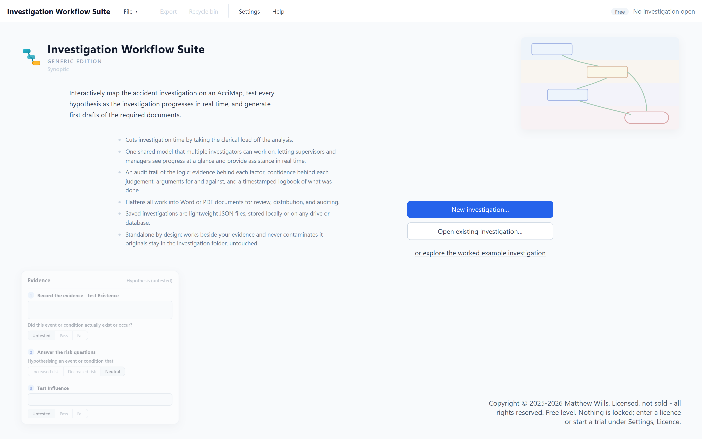
Start your own with File, New investigation: name it and choose where it lives, and the app creates a folder there holding the investigation file and an exports subfolder that exports and report drafts write into. The whole investigation - map, checklist, timeline, interviews, evidence captures, logbook - lives in the single .sfm file, compatible in both directions with the original application, so the folder can sit beside your other investigation material (OneDrive included).
Save with Ctrl+S; a dot beside the project name marks unsaved changes, and autosave writes every five minutes once the file has a home. If a save ever fails the app says so plainly - a red notice, not silence. Every edit is undoable with Ctrl+Z, deleted objects are recoverable from the recycle bin, and File, Reopen last restores the previous investigation at the start of the next session; in a browser this takes one permission click.
Investigations on a shared folder
A .sfm on OneDrive or a network drive can be open on two machines at once, and every save writes the whole file, so the last writer would otherwise win without either person noticing. Two guards sit under that. The app notes the file's size and modification time each time it reads or writes it, and if the copy on disk has changed since, the save is held and you choose what happens: take theirs and reload, save yours alongside as a copy, or write over theirs. There is no merge, because a whole investigation file cannot be merged safely, so the choice is deliberate and it is yours. Beside the file the app also keeps a <name>.sfm.lock while the investigation is open, refreshed about every minute and removed on close, so whoever opens it next is told you have it. The lock only warns: a synced folder can delay it by minutes, and a stale one from a crash or a sleeping laptop is ignored, so the size-and-time check is the guard that actually holds.
Connecting a model
The investigation itself runs with no model involved. Drafting is the only part of the application that wants one, and how it reaches one is a single setting you control. This section says what that setting does, what leaves your machine when it is switched on, and which kinds of model are suitable for investigation material.
The three levels of AI access
Settings, under Report drafting, carries one choice called AI access, and it decides how every Draft action in the app behaves, from a single factor's analysis paragraph to the whole report.
No AI means no model is involved anywhere. Reports are assembled from the record under the chosen style's headings, every Draft control says so, and nothing about the investigation leaves the machine. This is the level the app starts at, and it is the level it falls back to without a licence.
Chat means the app builds the prompt and copies it out for you. You paste it into whatever chat tool you are entitled to use, paste the reply back, and the app checks and files it like any other draft. The application makes no network call of its own at this level; you are the transport, and you see exactly what is being sent because you are the one pasting it.
Endpoint means the app sends the prompt itself, over the network, to a model server you have configured. This is the only level at which the application sends investigation content anywhere by itself.
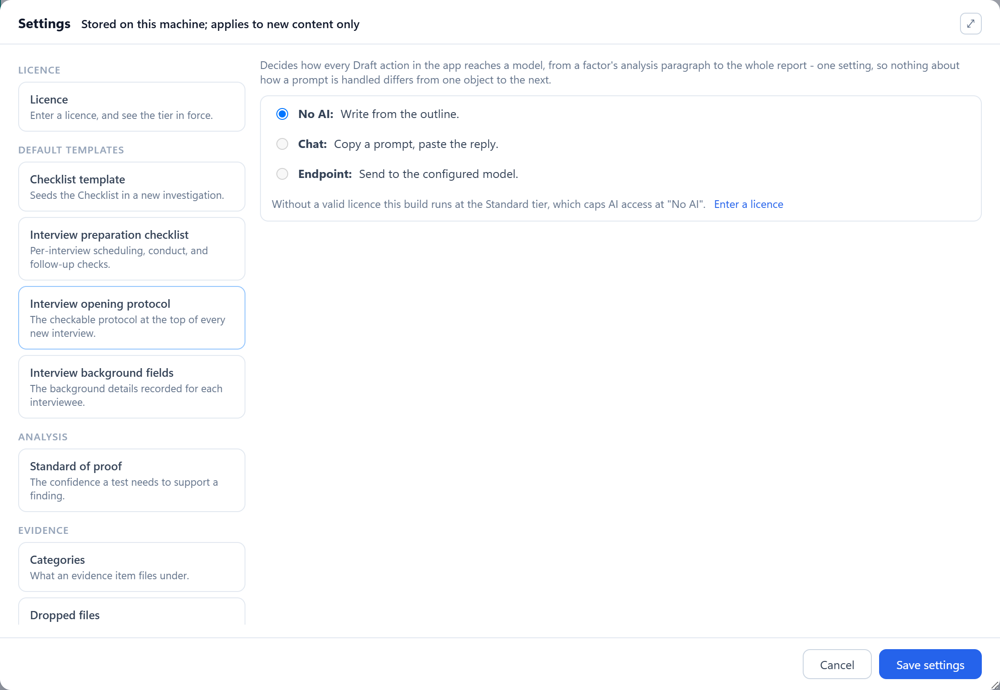
Your licence tier caps this choice. The Standard tier allows No AI only, the Chat tier adds the copy-out route, and the Endpoint tier allows all three. An edition can cap it further, and the stricter of the two applies; where a level is greyed out, the pane says which of the two is holding it down.
What an endpoint is, in this app's terms
An endpoint is a named profile describing one model server. The LLM endpoints pane holds as many as you like and marks one of them the default. Each one asks for a Name, a Base URL, a Drafting model and an Audit model (picked from the list the server reports, or typed in), a Protocol, an Auth header, an API key, and how much of each safety factor to send, either the full argument or the conclusions only. Test checks the server answers before you rely on it.
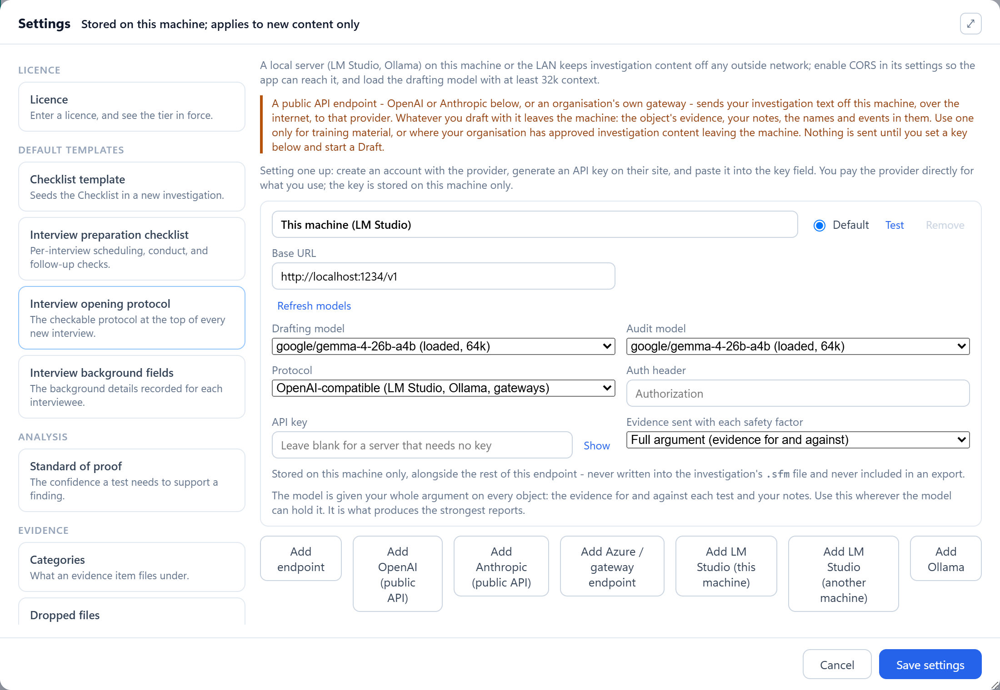
Protocol is the part worth understanding, because it is what decides whether a given server will work at all. OpenAI-compatible posts each call to /chat/completions under the base URL, which is the shape LM Studio, Ollama and most corporate gateways expose. Anthropic Messages API posts to /messages instead and sends a version header with every call. Either way the app asks the server's /models path for the model list, and the key, if there is one, goes in the header you name, with Authorization and a Bearer prefix assumed when you leave it blank. A server that speaks neither of those two shapes needs a gateway in front of it that does.
A key is a credential and is treated as one. It is stored on that machine alone, never written into the .sfm, never included in an export, and removed from any error message the server echoes back, so it cannot travel with an investigation you share or turn up in a screenshot.
What is sent, and where it goes
A drafting run sends the whole collated record: every object with its tests, confidences and reasoning, the timeline, the finalised interviews, the evidence, and the safety reports. People appear by role rather than by name throughout, which is done when an interview or a transcript is brought in rather than at the point of drafting, so the name never reaches the record, the collated export or any model. Where a local model cannot hold all of it, set that endpoint to conclusions only and it is sent the result of each test rather than the whole argument.
It goes to the endpoint you configured and nowhere else. The application has no service of its own, phones nothing home, and sends no telemetry. If you have configured no endpoint and left AI access at No AI, nothing about the investigation leaves the machine at all.
Not a consumer chat service
Investigation material is sensitive, and a consumer chat service such as ChatGPT, Claude.ai or Gemini is the wrong place for it. Those accounts sit outside your organisation's data agreements, the content can be retained or reviewed, and you have no way to say afterwards where it went. The application is not designed to be pointed at one: the endpoint route expects an API you or your organisation controls, not a consumer chat window. Use the alternatives below instead.
A local model on your own machine
LM Studio or Ollama runs a model on the investigator's own computer, and the app reaches it at an address like http://localhost:1234/v1. On data, this is the strongest option available: nothing leaves the computer, so there is no agreement to negotiate and no provider to trust. On cost, there is none beyond the hardware you already have. On quality, it is the weakest of the three, because a model that fits on a laptop is far smaller than a hosted one, holds less of the record at once and writes less well, which is why the conclusions-only setting exists. There is nothing to ask IT for unless the machine is locked down, in which case you need permission to install the runner, and the firewall left alone if the model is to run on a second machine on the same network.
Your organisation's private cloud endpoint
Most organisations that allow model use at all do it this way: AWS Bedrock, Azure OpenAI, Google Vertex AI, or an internal gateway sitting in front of one of them. On data, the material goes to the cloud but stays inside the organisation's own tenancy and its own agreement with the provider, which ordinarily means no training on your content and a stated retention period. On cost, it is metered per call and paid by the organisation, and a whole-report draft is a handful of large calls rather than thousands of small ones. On quality, it is the best of the three, because these are the frontier models and they can hold the entire record. Ask IT for the base URL, whether it speaks the OpenAI-compatible or Anthropic shape, which header the key goes in, the deployment or model names for the drafting and audit roles, a key, and the retention terms in force so you can record them.
Your organisation's own hosted model
Some organisations host an open-weight model on their own servers and expose it as an internal API. On data, this is as contained as a local model while still being a proper service, since the material never leaves the organisation's own infrastructure. On cost, there is no per-call charge, but the organisation carries the hardware and the people to run it, so it only exists where the demand already justified it. On quality, it sits between the other two and depends entirely on which model they chose and how much context it is configured to accept. Ask IT the same questions as for a cloud endpoint, and one more: how much context the deployment accepts, because a record that does not fit is the usual reason drafting fails on an internal server.
When there is no endpoint at all
Chat is for the common case of an investigator who is allowed to use an approved chat tool but has no API to point the app at. The app builds the same prompt it would have sent, you move it across by hand, and the reply comes back into the same checks, provenance and finalising as any other draft. The same caution applies to which chat tool you paste into: it should be one your organisation has approved for material of this sensitivity, not a personal account.
What the published case studies used
The case studies on the website were drafted with a Claude-based pipeline, reached through the suite's own sealed command-line transport rather than an API key, standing in for the kind of private cloud endpoint an organisation would use in practice. The pipeline, the prompts, the audit and the checks are the ones the application ships.
Templates and settings
Settings is reached from the header. Everything in it is stored on this machine rather than in the investigation, so it follows you between investigations but not between machines. A list of panes runs down the left, grouped under headings; the dialog's own footer carries Cancel and Save settings.
Licence
Shows the tier in force, who the licence names, and its expiry. A box takes a pasted licence, placeholder IWS1.…, with Apply licence and Remove licence beside it.
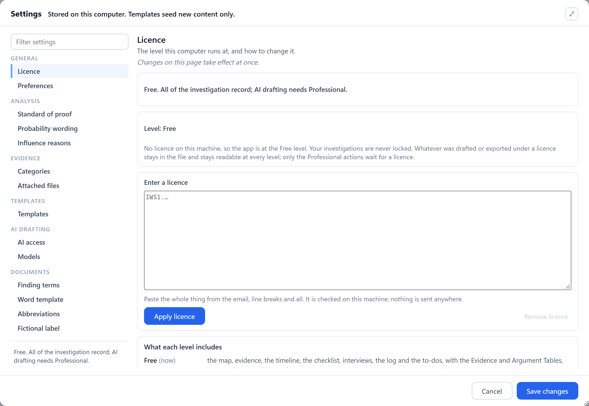
Default templates
Settings holds the default templates as plain, editable text: the investigator's checklist, the interview preparation checklist, the interview opening protocol, and the interview background fields. Each is one editable text box with Reset to built-in above it, and a pane whose text has been changed is marked edited in the list.
Templates seed new content only. Creating an investigation copies the checklist template into its file; adding an interview copies the preparation, opening, and background templates into that interview. From then on the copy belongs to the investigation - it travels in the .sfm, is edited in place, and is never rewritten by later template changes. Template overrides are stored on the machine, not in the investigation, and Reset to built-in returns any template to the edition's default.
Checklist template
Seeds the investigator's checklist in a new investigation. Each uses a simple line format - # Section starts a checklist section, - item adds a question or checkbox, > text adds a guidance note or a statement to read aloud, and two leading spaces nest an item; background fields are one entry per line.
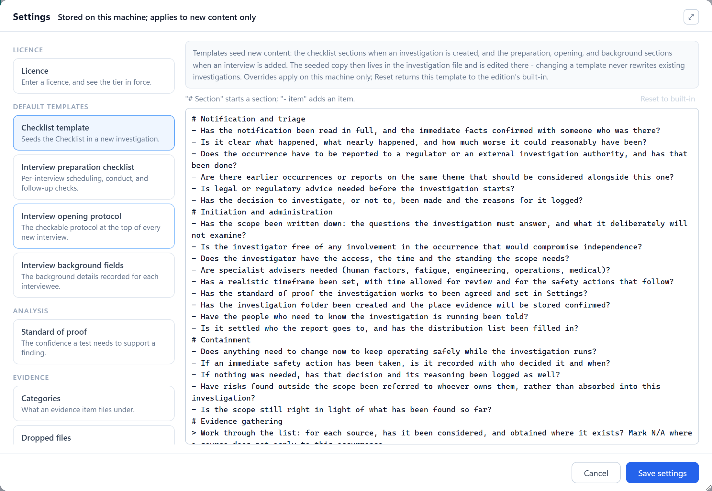
Interview preparation checklist
Seeds the preparation checklist copied into every new interview: the scheduling, conduct and follow-up checks to work through before and around it.
Interview opening protocol
Seeds the checkable protocol at the top of every new interview, including the statements to read aloud before it starts.
Interview background fields
Seeds the background details recorded for each interviewee, one field label per line.
Analysis
Standard of proof
Required confidence for a finding offers a list of standards in steps of 5 from 50 to 95 per cent, each named by the standard it is and saying which band of the probability scale it opens or sits inside. Different organisations set different standards: transport safety investigators commonly work to likely or probable, which is 70 per cent; some Just Culture frameworks use 60 per cent; the civil balance of probabilities is 50 per cent. Beside it, Show guidance in the evidence form ticks the small "?" buttons on and off; they open the method explanation for the expectations test, the counterfactual test and the risk questions, and turning them off gives a clean form once the method is second nature.

Evidence
Categories
The list an evidence item files under, each row with its name, Move up, Move down and Remove. Add a category sits below it with its own box and an Add button, and Reset to built-in appears once the list differs from the built-in one. An item always keeps its category as its own text, so renaming or removing one here only changes what the picker offers for the next item filed, never material already captured, and typing a category that is not on the list still works.
Influence reasons
The groups the Influence test's Reason drop-downs offer, one per criterion (the target factor, mechanism, association, alternative explanations, timing, location, magnitude, expected effects, the counterfactual and so on), each row editable the same way a category is. A custom reason not tied to one of those criteria goes under Other, added from a box below the groups, with Reset to built-in appearing once the list differs from the built-in set.
Dropped files
Decides where a dropped file goes. An investigation is normally one self-contained file: everything captured goes inside the .sfm, which is why a dropped file is held to 2 MB, or 5 MB for an image. Keep dropped files beside the investigation turns that off: a dropped file is kept in an attachments folder beside the .sfm instead, with the evidence item recording its name, its size and where it went; the limit rises to 100 MB, which takes a set of scanned reports. The trade is that the investigation becomes a folder to send rather than a file, so leave it off if your document system takes only one file. Pasted screenshots and pasted text stay inside the .sfm either way, nothing already captured moves, and the setting lives on your machine rather than in the investigation. The investigation has to have been saved before a file can be kept beside it; drop one into an unsaved investigation and you are asked to save it first.
Report drafting
AI access
One choice decides how every Draft action in the app reaches a model, from a factor's analysis paragraph to the whole report: No AI writes from the outline with no model involved; Chat copies a prompt out for you to paste into a chat and takes the reply back; and Endpoint sends the prompt straight to a configured model. Where a licence's tier caps the choice, the capped options are greyed out and Enter a licence sits beside the explanation.
Below it, once the choice is Chat or Endpoint, a second tick, Polish the prose after drafting, is off by default and works only at the Endpoint tier: a draft that lands - one section or the whole report - goes straight into the polish pass over what was just drafted, offered the same way the Draft report tab's own Polish button offers it. At the Chat tier the tick is shown but disabled, with its help line saying why: that tier pastes every reply back by hand, so there is nothing to run automatically.
LLM endpoints
One block per configured endpoint. Each carries a Name field, a Default radio, Test and Remove, then Base URL and Refresh models, Drafting model and Audit model (each a list of what the server reports, with Other… (type a model id) for one it does not list), Protocol as a choice of OpenAI-compatible (LM Studio, Ollama, gateways) or Anthropic Messages API, Auth header, Anthropic API version where the protocol is Anthropic, API key with Show and Hide beside it, and Evidence sent with each safety factor, a choice of Full argument (evidence for and against) or Conclusions only (smaller, for local models).
At the foot, a row of presets starts a new endpoint already filled in: Add endpoint, Add OpenAI (public API), Add Anthropic (public API), Add Azure / gateway endpoint, Add LM Studio (this machine), Add LM Studio (another machine) and Add Ollama. A local server on this machine or the LAN keeps investigation content off any outside network; a public API endpoint sends your investigation text off this machine to that provider, and nothing is sent until a key is set and a draft is started.
Finding terms
Finding terms holds the words a Findings section uses: the three group headings, the safety issue tag, and the lane at which a safety factor becomes a safety issue. The pane opens with the rule those words are attached to, so an organisation can see what it is customising. An object that fails Existence, or passes it and then fails both Influence and Importance, is an excluded hypothesis and is reported under the other-findings heading. One that passes Existence and Influence and increased risk is a contributing safety factor. One that passes Existence, fails Influence and passes Importance is an other factor that increased risk. Everything else - a factor that reduced risk, a neutral event or condition, a factor whose Influence test was examined and left unsettled - goes under other findings. The lane then decides the tag: either kind of safety factor sitting in Risk Controls, or in a lane above it, is also a safety issue. It keeps its own heading, carries the tag, and is listed again in the report's Safety issues section; below that lane it is a safety factor and nothing more. The threshold lane is a setting like the words are, so an organisation using its own lane names can move it. Three layers decide each word, and the nearest one wins. The app has a built-in; a report style can declare its own instead, which most do, so different bodies' formats read as they should; and anything you type here overrides both, for every style on this machine. Leave a field empty to let the style decide it, and Reset hands it back. The word you set is used by the findings scaffold, by the report check that reads a drafted Findings section, and in the instruction a drafting model is given, so the three can never disagree.
Contributing factors heading, Increased-risk factors heading, Other findings heading, Safety issue tag and Safety issues start at this lane are each marked overridden and carry a Reset once you set them.
Probability wording
Probability wording, beside it, holds the words a report may use for each term on the probability scale. The ten terms themselves are fixed, so findings stay comparable between investigations; what you can change is how each one may be said. "Almost certainly" means the same band as "extremely likely", "probably" the same band as "likely", and a drafting model may reach for any phrase you list. Each row starts at the wording in force, so you edit the list in front of you rather than retyping it, and clearing a row hands it back to the built-in. A phrase already accepted under another term is refused, since a phrase meaning two bands would make every check that reads it ambiguous. The report checks read every phrase in use back as its term, so a report can read like English without a single claim changing strength. The confidence slider on an object's tests stops at 5 and 95 per cent as well as the round tens, so "very unlikely" and "extremely likely" can be recorded exactly rather than only reached by typing.
The pane is a table, one row per band, with three columns: From, Band and Term. The From figure is the lowest percentage the band covers, and you can change it: the app ships with the ATSB's own table from AR-2007-053, and an organisation working to different numbers edits them here. An edge is shared with the band below, so moving one number moves one boundary and the bands can never gap, overlap or swap order; a number outside what its neighbours allow is pulled back to the nearest value that works. The Band column reads the band back to you and names the slider steps that can record it, since two bands at the bottom of the scale, 1 to 4 per cent and under 1, have no slider step at all. Reset every band puts the standard table back. A moved edge follows through everywhere at once: the word the object form shows beside a slider, the standard of proof list, the findings scaffold and every check that reads a term from a percentage.
The Term column holds the phrases, each with a tick that takes it out of use without losing it, so an organisation that does not want "ruled out" read as a probability can switch it off and switch it back on later; a phrase out of use is offered to no drafting pass and read back by no check. The term's own word has no tick box, because a band with no word for itself leaves a check nothing to read. Type in the field itself to add a phrase or take one off the list altogether.
Each term also has a tick reading May be stated plainly, with no hedge for a statement with no hedge at all. It is on for "virtually certain" only, and should stay that way: where the investigation recorded 100 per cent, writing "the pump was unserviceable" says exactly what the record says, while the same flat sentence against a recorded "likely" claims more than the evidence supports. A drafted paragraph that drops the hedge that way is flagged after the draft lands, alongside the check for a term from the wrong band.
Documents
Word template
Current template shows what is set, or says none is. A file picker takes a .docx or .dotx file - your organisation's report template, or any document with the styles you want - and the app reads its heading and body styles only, so generated documents take its fonts and colours. Each export still keeps a plain cover (title, subtitle, drafted date) and its own page-number footer; the reference document's own header, footer, logo and cover wording are not carried through yet. Clear removes the template and returns to the app's built-in formatting.
Abbreviations
Abbreviations holds your organisation's glossary. Paste it straight in, one term per line, in the box under One per line, short form first. A term on the list may be written out at first use in a drafted report, using exactly the meaning you gave it; anything not on the list is reproduced as the source wrote it and never guessed at, so an unfamiliar code stays as the investigator recorded it rather than becoming a confident mistake. Every drafted report ends with an abbreviations table covering the terms it actually used, built by matching the finished text rather than asked of the model, so it cannot list a term the document never used or invent a meaning. Codes the glossary does not cover are named at the end of the grounding audit, for you to add or write out. Reset to edition list, Import…, Merge… and Export… sit below the box, for sharing the glossary as a file between machines or starting again from the edition's own list.
Fictional label
The words a fictional case's exports carry in their header and footer, for an investigation marked with the Fictional case tick on the Record tab. The built-in label reads "Fictional case study for training. Not a real investigation."; change it in the Label box, or put it back with Reset to the built-in label. Start new investigations as fictional cases is for an installation used for teaching: with it ticked, File, New investigation starts every investigation already marked, and the mark can still be taken off on the Record tab. Both settings belong to this machine, and neither changes an investigation that already exists.
Exporting
Export in the header writes a timestamped folder containing whichever outputs you tick, plus a snapshot of the .sfm file for the record. When the investigation was created with File, New investigation, exports land in its exports subfolder automatically; otherwise the app asks where (or downloads the files in a browser). The outputs come in three groups:
- Word documents - the investigation report and a summary with the map image embedded, ready for distribution or further editing. The E/I/I tables are also available as Word tables: the test results and supporting text for every object, grouped by lane.
- Markdown and text - the same report content as plain files, and the report-drafting collation: everything the investigation holds (tested map, evidence, notes, interviews, captured material) structured for a local LLM to draft the report from.
- Image - the full map as a PNG, rendered with every object in frame regardless of the current zoom, and the timeline as arranged on its tab, with entity colours and legend.
The Export dialog
Every output is a tick, and nothing is written until you press the button at the foot. The ticks are remembered, so the second export of an investigation asks nothing the first one did not.
Under Word documents sit Investigation report (.docx), Summary with map (.docx) and E/I/I test tables (.docx). Under Markdown and text sit Investigation report (.md), Investigation report (.txt), E/I/I test tables (.md) and Report-drafting collation (.md). Under Image sit Investigation map image (.png) and Timeline image (.png). Each tick carries a line saying what that file holds.
Beside the title, a count of the objects that are not finalised yet, so an export sent early is a decision rather than an oversight. Export selected writes the lot and reads Exporting… while it works, then names the folder it wrote to. Close leaves without writing anything.
Binary supporting material - object attachments, timeline captures, evidence files - is unpacked into an attachments subfolder of the export, so every file reference in the reports resolves to a real file beside them. Exports warn when objects are not finalised, and every report marks untested material clearly, so a draft sent early cannot be mistaken for a finding. Report drafting with a local LLM is covered in its own section above.
A drafted report comes out as a document meant to be read on paper: a cover page, a contents page after it, and every major section starting on a new page. Word builds the contents itself from the headings, which is why it asks once, as the document opens, whether to update the fields in it. Say yes and the entries and page numbers fill in. That question is Word doing its job, not a fault in the file. Word words it as "This document contains fields that may refer to other files", but it is only filling in the contents and the figure numbers, and Yes is the answer. The outline export has no contents page and does not ask.
An investigation marked as a fictional case (the Fictional case tick on the Record tab) says so on every page it exports. Each Word document, report, summary, E/I/I tables and every appendix alike, carries the fictional-case label in its running header and in its footer, under the built-in look or a Word template set in Settings. The markdown and text exports open with it, the report-drafting collation carries it on its title line, the map and timeline images show it under the render date in their title bar, and the slide deck prints it across the foot of each slide.
The example reports and PDFs that ship with the app came out of this same path, run against the worked example investigation, so what you see there is what the app writes rather than something tidied up by hand afterwards.
Licence and tiers
What a licence decides is the tier, and the tier is how far AI drafting may go. Standard is the whole application with no AI: the map, evidence, the timeline, the checklist, the to-dos, the E/I/I tables and the assembled report. Chat adds Draft actions that copy a prompt out for you to paste into a chat and take the reply back. Endpoint adds a configured model endpoint, whole-report drafting and the audit passes.
With no licence, this Generic edition build runs at the Standard tier and every output - reports, images, tables - carries a "EVALUATION COPY" watermark. Nothing is ever locked: the app does not stop working, and your investigation files are not touched by any of this. A .sfm written unlicensed opens in any build.
A free 30-day trial is the full application, Endpoint tier and all. Email the copyright holder with your name and email address and you will be sent one; say if you are working through a transport safety investigation course, since a licence can be issued to last it out. There is no trial the app starts by itself, so there is nothing to reset by reinstalling.
A licence arrives as a block of text beginning IWS1.. Open Settings, choose Licence, paste the whole thing into the box - line breaks and all, they do no harm - and press Apply. The pane then shows the tier in force, who the licence names, and when it runs out. It is checked on this machine against a key built into the app; nothing is sent anywhere, and it works with no network at all. If a paste is refused, the pane says which of the problems it is: not a licence, not issued for this application, issued for a different edition, or expired. The app header carries a chip reading either "Standard tier" or "Licensed" with the days left on it; hover it for who the licence names and its expiry date, and click it to open this pane.
Two things can cap AI access, and the lower of the two wins: your licence, and the edition itself. Settings, AI access greys out the choices above the cap and says which of the two is holding it there. When a licence lapses the app drops back to Standard with the watermark; renewing restores it. One thing to know about the clock: if the machine's date is set earlier than the last date the app saw, the licence is treated as expired until the date is put right.
Getting the app
On your own machine, use the installed desktop application. On a machine without administrator rights (a corporate laptop), try these in order:
- Standalone exe. Copy
investigation-workflow-suite.exeanywhere and run it - nothing is installed. It needs only the WebView2 runtime, standard on Windows 10 and 11. Full native file dialogs and in-place saving. - Per-user installer. The
...x64-setup.exeinstaller puts the app in your user profile with no admin prompt and adds a Start-menu entry. - Portable bundle. Copy the
portablefolder to the machine and double-clickStart IWS.bat. Python's built-in web server hosts the app and your browser opens it - nothing is installed and the bundle contains no executable, so application-control policies have nothing to block. Open and Save work on real.sfmfiles in Edge or Chrome; exports arrive as downloads.
Controls
| Pan | drag empty canvas · wheel scrolls · Shift+wheel sideways |
| Zoom | Ctrl+wheel · the −/+ controls step 5% · Fit frames everything |
| Select | click · Shift+drag for a box · Ctrl+click to add |
| Move | drag any selected object · arrow keys nudge one grid step |
| Edit | double-click for the evidence form · drag handles to resize |
| Connect | hover an object, drag from an edge port, drop on the target |
| Duplicate | Ctrl+D |
| Delete | Delete (recoverable from the recycle bin) |
| Undo / redo | Ctrl+Z / Ctrl+Y |
| File | Ctrl+O open · Ctrl+S save · Ctrl+Shift+S save as |
| Help | F1 |